50 saved questions rebuilt from local capture only. Missed: Q13, Q16, Q24, Q40.
Q1
hard QID 21120
Correct
A 42-year-old male patient presents for evaluation of dysphagia. The below findings remain fixed with multiple swallows. Which of the following is the diagnosis?
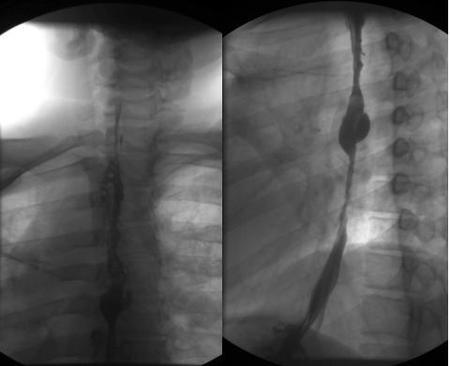
AEosinophilic esophagitis(4%)
BBarrett’s esophagus(9%)
CAchalasia(0%)
DLye ingestion(78%)
EDiffuse esophageal spasm(8%)
Your answerD
Correct answerD. Lye ingestion
Explanation
Lye ingestion
The finding of a long segment of irregular stricturing (yellow arrows) with sacculation and pseudodiverticula (green arrow) formation is highly suggestive of caustic esophageal injury. The esophagus is shortened due to scarring and contraction with traction of the proximal stomach into the chest, another suggestive finding. Alkali agents produce these findings via liquefactive necrosis, while acidic agents may also do this, but by a coagulative necrosis mechanism.
Incorrect Answers:
A. Eosinophilic esophagitis typically produces a ringed appearance of the esophagus with associated long segment stricturing and esophageal dysmotility.
B. Barrett’s esophagus is a columnar metaplasia of the esophageal mucosa, usually in the distal portion of the esophagus, related to chronic reflux. The presence of a mid-esophageal stricture with hiatal hernia and reflux is strongly suggestive of the presence of Barrett’s esophagus.
C. Achalasia is a primary esophageal dysmotility disorder which typically produces gross esophageal dilatation with bird’s beak narrowing of the distal esophagus at the gastroesophageal junction due to abnormality of Auerbach’s myenteric plexus in the distal esophagus, vagus nerve degeneration, or loss of input from parasympathetic vagus nuclei.
E. Diffuse esophageal spasm is another primary esophageal dysmotility disorder that typically produces repetitive, nonpropulsive contractions of the esophagus with a corkscrew appearance.
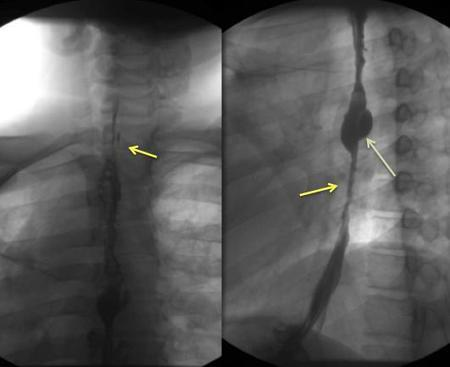
Q2
easy QID 39280
Correct
A 70-year-old male patient presents to the emergency room with severe chest pain. The on-call physician orders labs for cardiac enzymes but does not order any imaging or EKG. Which of the following errors has the physician made?
ACommunication(0%)
BDiagnostic(94%)
CEquipment(0%)
DPreventive(1%)
ETreatment(4%)
Your answerB
Correct answerB. Diagnostic
Explanation
Diagnostic
Radiologists’ diagnostic errors are sorted into those related to failures in detection, interpretation, communication of results, or suggesting an appropriate follow-up test.
The physician failed to order any imaging or EKG when it was indicated, thereby making a diagnostic error. Diagnostic errors occur when there is an error or delay in diagnosis, failure to employ indicated tests, use of outmoded tests, or failure to act on test results. Diagnostic errors can lead to errors in treatment or prevention.
Incorrect Answers:
A. Communication errors occur when there is a failure to properly pass information from one party to another. Errors in communication can occur between health care providers or when health care providers are communicating with patients or their family members. Communication errors can lead to errors in diagnosis, treatment, or prevention.
C. Equipment errors occur when there is a malfunction of medical equipment that is intended to monitor status changes or provide therapy, thereby hindering patient care. Equipment errors that are not caught early can lead to serious errors in diagnosis or treatment.
D. Preventive errors occur when there is a failure to provide prophylactic treatment or when there is inadequate monitoring or follow-up of treatment. Preventive errors can significantly increase the difficulty of managing certain medical issues.
E. Treatment errors occur when there is an error in the performance or administration of a therapeutic intervention. These errors include medication dosing errors or using the incorrect method of administering medication. Treatment errors also occur when there is an avoidable delay in administering treatment, or when a certain treatment is not indicated.
Q3
easy QID 44236
Correct
A patient presents with a rapidly enlarging chest wall mass and leukocytosis. Computed tomography (CT) scan is performed and is depicted below. Which of the following is most consistent with the CT findings?
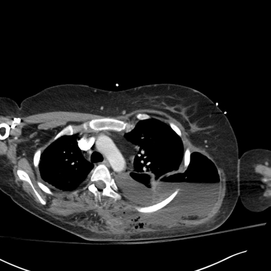
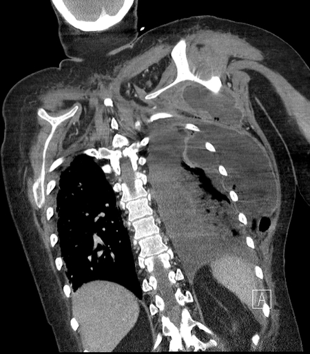
AEmpyema(98%)
BLymphoma(0%)
CLung cancer(0%)
DMesothelioma(1%)
Your answerA
Correct answerA. Empyema
Vital Concept
Empyema necessitans on CT show pleural infection extending through the chest wall with a fistulous track connecting the pleural cavity to an extrathoracic fluid collection.
Explanation
Empyema
CT images demonstrate empyema necessitans, an empyema that drains into the chest wall. There is gas within the pleural space as well as the disease in the chest wall, which is a typical appearance. Additionally, the pleural disease is continuous with chest wall disease. Common etiologies are tuberculosis, Actinomyces, Nocardia, Zygomyces, and Blastomyces. If the patient is post-op, then also consider Staph aureus. These are often treated with appropriate antibiotics as well as surgical drainage.
Incorrect Answers:
B. Though pyothorax associated lymphoma can be seen in the setting of chronic empyema and can mimic its appearance, there is no peripheral nodularity associated with the fluid collections in this case to specifically support this diagnosis.
C, D. Lung cancer and mesothelioma would both be expected to have more of an associated solid component; this case demonstrates a fluid collection without significant solid component.
Vital Concept: Empyema necessitans on CT show pleural infection extending through the chest wall with a fistulous track connecting the pleural cavity to an extrathoracic fluid collection.
Q4
easy QID 4962
Correct
A 60-year-old male presents with acute abdominal pain and hematochezia. Which of the following is the diagnosis?
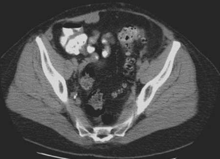
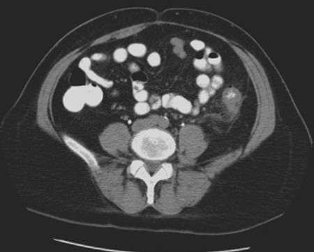
AIschemic colitis(1%)
BDiverticulitis(93%)
CEpiploic appendagitis(3%)
DColorectal carcinoma(2%)
Your answerB
Correct answerB. Diverticulitis
Vital Concept
Inflammatory changes with microperforation indicates contained bowel wall breach requiring antibiotic therapy and monitoring for progression, distinguishing from simple pericolonic fat stranding managed conservatively and free perforation requiring emergency surgical intervention.
Explanation
Diverticulitis
The patient's age and imaging findings fit this diagnosis. Acute diverticulitis is a complication of diverticular disease usually affecting the colon, predominately the sigmoid colon. A small amount of curvilinear air is seen along the ventral margin of the inflamed colonic wall in the first image and likely represents air tracking intramurally in the setting of microperforation. Ischemia with pneumatosis could also produce a similar appearance.
Incorrect Answers:
A. The patient has multiple colonic diverticula, a focal area of eccentric bowel wall thickening, and pericolic fat stranding at the junction of the descending colon and the sigmoid colon. The bowel wall thickening and pericolic inflammation represent a phlegmon. These findings are diagnostic of acute diverticulitis.
C. Epiploic appendagitis is a self-limiting ischemic process involving an appendix epiploica of the colon and presents as a fatty mass adjacent to the colon with a high-density rim and a central hyperdense dot representing the thrombosed vascular pedicle.
D. Colorectal cancer is a good possibility in this case. However, colorectal cancer tends to present with chronic pain and obstructive symptoms. Also, the bowel wall involvement tends to be more circumferential with lumen-narrowing "apple core lesion."
Vital Concept: Inflammatory changes with microperforation indicates contained bowel wall breach requiring antibiotic therapy and monitoring for progression, distinguishing from simple pericolonic fat stranding managed conservatively and free perforation requiring emergency surgical intervention.
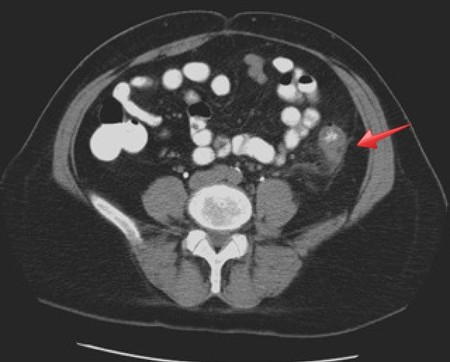
Q5
easy QID 39324
Correct
Asking a wealthy patient to invest in the physician’s new start-up company is a violation of which of the following professional responsibilities?
ACommitment to honesty with patients(0%)
BCommitment to improving quality of care(0%)
CCommitment to patient confidentiality(0%)
DCommitment to maintaining appropriate relations with patient(98%)
ECommitment to professional competence(1%)
Your answerD
Correct answerD. Commitment to maintaining appropriate relations with patient
Vital Concept
Physicians should never seek sexual advantage, personal financial gain, and other forms of exploitation from their patients.
Explanation
Commitment to maintaining appropriate relations with patient
Asking a patient to increase the health care professional's personal finances violates the maintenance of an appropriate patient relationship. Maintaining an appropriate relationship with patients is a key professional responsibility. Patients are vulnerable to and dependent on physicians providing their care, which should lead physicians to actively avoid taking advantage of their patients.
Incorrect Answers:
A. Honesty with patients is a key professional responsibility. Physicians must honestly and completely inform patients to ensure that patients make their best decisions in regard to medical treatment and understanding their recovery. Honesty helps empower patients to decide on their therapeutic course.
B. Improving the quality of care is a key professional responsibility. Physicians must continuously work to improve their patients’ health care. This commitment entails not only maintaining clinical competence but also working collaboratively with other professionals to reduce medical error, increase patient safety, minimize overuse of health care resources, and optimize the outcomes of care.
C. Respecting patient confidentiality is a key professional responsibility. Physicians must ensure that appropriate safeguards are in place to protect their patients’ personal information, especially as advancements in biotechnology increase access to a person’s demographic data and genetic information. There are situations in which patient confidentiality can be overridden, including when a patient will potentially endanger others.
E. Professional competence is a key professional responsibility. It involves lifelong learning and maintaining the most up-to-date medical knowledge. Professional competence also involves maintaining clinical and team skills necessary to provide quality care.
Vital Concept: Physicians should never seek sexual advantage, personal financial gain, and other forms of exploitation from their patients.
Q6
easy QID 21582
Correct
A 15-year-old male patient presents with worsening chest pain. Which of the following is the most likely etiology?
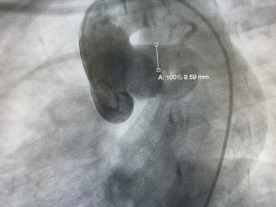
AAtherosclerosis(1%)
BTakayasu arteritis(7%)
CGiant cell arteritis(1%)
DPolyarteritis nodosa(1%)
EKawasaki disease(91%)
Your answerE
Correct answerE. Kawasaki disease
Explanation
Kawasaki disease
Kawasaki disease is an inflammatory disease of medium and small blood vessels most commonly seen in young children. The typical acute clinical presentation is with marked lymphadenopathy, persistent fever, mucocutaneous inflammation, and erythematous palmar-solar rash. A delayed complication of Kawasaki disease is the formation of coronary aneurysms, sometimes seen with peripheral calcification. Given the patient’s young age, the angiogram showing coronary aneurysm should strongly suggest a history of Kawasaki disease.
Incorrect Answers:
A. Atherosclerosis is a common cause of coronary aneurysm in the adult population. However, it is quite rare in children.
B. Takayasu arteritis is a granulomatous vasculitis of medium and large vessels that frequently causes narrowing of the aorta and large aortic branches, as well as occasionally the pulmonary arteries.
C. Giant cell arteritis, or temporal arteritis, is a granulomatous vasculitis of medium-sized vessels that typically produces painful inflammation of the temporal arteries, most commonly in elderly patients.
D. Polyarteritis nodosa is a necrotizing vasculitis of medium and small vessels that produces prominent microaneurysms and occlusions. The typical imaging presentation is multiple aneurysms and segmental multifocal stenoses of medium-sized arteries on angiography.
Q7
hard QID 56752
Correct
The American College of Radiology (ACR) Appropriateness Criteria provides alternative imaging-based screening for colorectal cancer. What is the appropriate screening interval in an average-risk patient who is over 50 years old?
ACT colonography every 10 years after initial negative screen(22%)
BCT colonography every 5 years after initial negative screen(76%)
CDouble-contrast barium enema every 10 years after initial negative screen(1%)
DDouble-contrast barium enema every 3 years after initial negative screen(1%)
Your answerB
Correct answerB. CT colonography every 5 years after initial negative screen
Explanation
CT colonography every 5 years after initial negative screen
The Appropriateness Criteria recommends that average-risk patients >50 years old may undergo screening with CT colonography every 5 years after an initial negative screen as an alternative to colonoscopy. Advantages of CT colonography over traditional colonoscopy include non-invasive technique and the absence of moderate sedation. However, colorectal cancer screening with CT in high-risk individuals due to genetic risk factors or underlying inflammatory bowel disease is usually not appropriate. CT colonography has superseded double-contrast barium enema as the ideal imaging-based screening method and is reflected in its higher Appropriateness Criteria score. Since colonography has lower sensitivity for small/flat lesions, and since colonoscopy allows for polypectomy and pathological evaluation, colonoscopy allows for a longer interval (10 years) than colonography in average risk patients with negative initial screen.
Incorrect Answers:
A. CT colonography screening for colorectal cancer is every 5 years.
C. and D. Double-contrast barium enema may be an appropriate colorectal screening method, but the screening interval is every 5 years.
Q8
hard QID 2713
Correct
Which of the following sequences would be best for evaluating myocardial edema?
ABlack blood fast spin echo (double inversion recovery)(59%)
BStandard gradient echo sequence (GRE)(11%)
CSteady-state free precession (SSFP)(26%)
DEcho planar imaging (EPI)(4%)
Your answerA
Correct answerA. Black blood fast spin echo (double inversion recovery)
Vital Concept
The darkness of the blood pool on black blood cardiac imaging sequences grants better conspicuity of findings within the adjacent cardiovascular anatomy.
Explanation
Black blood fast spin echo (double inversion recovery)
Black blood imaging refers to the low signal intensity appearance of fast-flowing blood in the heart and is useful for delineating anatomic structures and evaluating tissue. The darkness of the blood pool grants better conspicuity of findings within the adjacent cardiovascular anatomy.
Incorrect Answers:
B. Standard gradient echo sequences are used to obtain bright blood images and are typically used to evaluate cardiac function.
C. Steady-state free precession images are routinely used for cine-MR to evaluate cardiac function. They have a higher signal-to-noise ratio, contrast-to-noise ratio, and a faster acquisition time than standard GRE sequences.
D. Echo-planar imaging is a fast magnetic resonance (MR) sequence used to obtain cine-MR images for the evaluation of cardiac function.
Vital Concept: The darkness of the blood pool on black blood cardiac imaging sequences grants better conspicuity of findings within the adjacent cardiovascular anatomy.
Q9
QID 55989
Correct
A 43-year-old female patient with an elevated BMI presents with the following ultrasonographic finding. The patient reports no history of malignancy. A contrast-enhanced CT scan is obtained for further characterization of the >5 cm lesion. Which of the following is the most common hormonal presentation of this disease process?
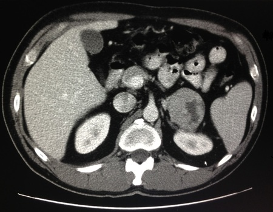
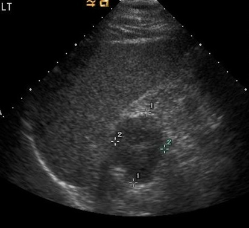
AFeminization(1%)
BHypernatremia(7%)
CHyponatremia(20%)
DCushingoid changes(72%)
Your answerD
Correct answerD. Cushingoid changes
Vital Concept
Adrenocortical carcinoma appears as large heterogeneous masses with necrosis and calcifications, showing hypervascular enhancement with washout <40%, often functioning to cause Cushingoid features.
Explanation
Cushingoid changes
Ultrasound reveals an infrasplenic hypoechoic mass (yellow arrow). CT scan reveals an enhancing mass with central necrosis causing mass effect upon the kidney (red arrow). Given the imaging findings, the best diagnosis is an adrenocortical carcinoma (ACC). Other less likely considerations would include metastasis or pheochromocytoma.
Approximately 60% of ACC's are sufficiently secretory to present clinical syndrome of hormone excess. About 45% of adults with hormone-secreting ACC's present with Cushing's syndrome alone. There is a mixed Cushing's and virilization syndrome, with overproduction of both glucocorticoids and androgens in about 25%. They may contain regions of hemorrhage and necrosis as well as extend into the inferior vena cava (IVC). Adrenal masses greater > 5 cm should generally be surgically removed.
Incorrect Answers:
A. B. Feminization and hyperaldosteronism occur in fewer than 10% of cases.
C. Endocrine dysfunction is seen in the majority of cases.
Vital Concept: Adrenocortical carcinoma appears as large heterogeneous masses with necrosis and calcifications, showing hypervascular enhancement with washout <40%, often functioning to cause Cushingoid features.
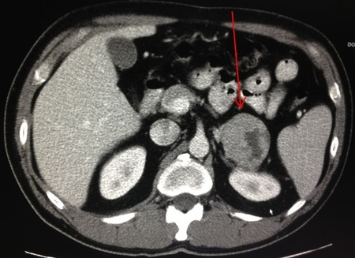
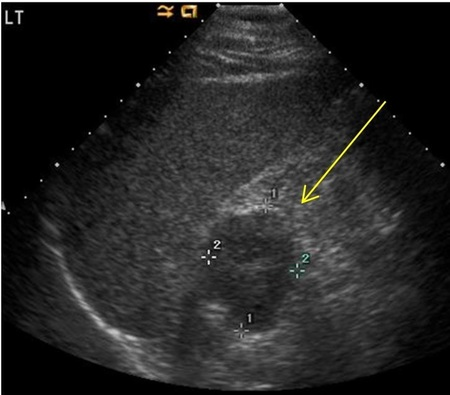
Q10
QID 21572
Correct
A 35-year-old female patient presents to the emergency department with worsening dyspnea and a facial rash. A chest x-ray is performed and compared to a routine chest radiograph obtained 10 days prior. Which of the following is the diagnosis?
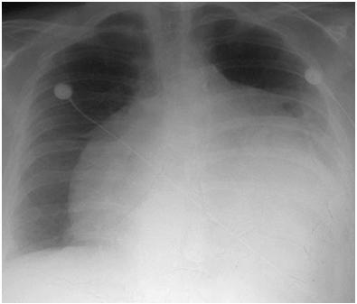
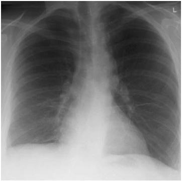
ASystolic congestive heart failure (CHF)(0%)
BMyocardial infarction(0%)
CPulmonary embolism and right ventricular strain(0%)
This patient presents with history, physical examination, and imaging findings suggestive of lupus-related pericardial effusion. The relatively rapid onset enlargement of the cardiomediastinal silhouette and flask-shaped cardiac shadow (yellow arrows) all suggest the development of pericardial fluid. Rapid-onset pericardial effusions can be quite symptomatic and induce diastolic dysfunction as they compress the right ventricle and atrium. However, slow-onset effusions can become quite large and remain asymptomatic, as the pericardium is able to stretch and accommodate the fluid over time. Lupus is a known etiology for development of pericardial effusion. Additional etiologies include post-myocardial infarction Dressler syndrome, uremia, nephrotic syndrome, and congestive heart failure.
Incorrect Answers:
A. Systolic CHF could cause the development of a pericardial effusion. However, the given history and physical findings are more in keeping with lupus.
B. Myocardial infarction could produce a pericardial effusion and should probably be ruled out in this patient. However, given the history, lupus is more likely to be the diagnosis.
C. Pulmonary embolic disease could cause right ventricular enlargement and produce an enlarged cardiac silhouette as well as producing a pericardial effusion. However, the given history is more in keeping with lupus.
E. Hemopericardium should be considered in the post-trauma patient or in a patient suspected to have an aortic dissection.
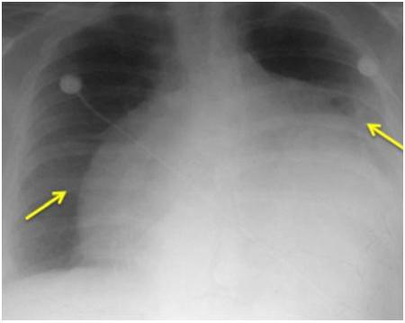
Q11
QID 48241
Correct
A 12-year-old male patient presents with the computed tomography (CT) findings shown. Which of the following is generally true?
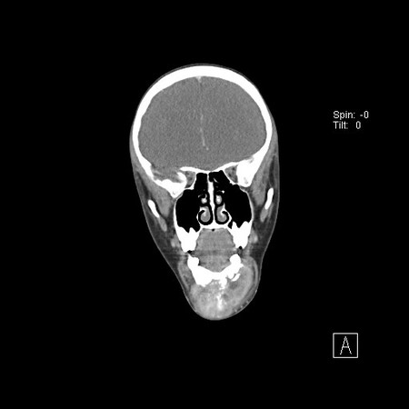
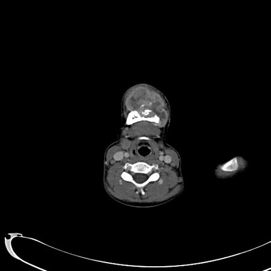
AOdontogenic infection is the most likely cause.(14%)
BFindings are consistent with fibrous dysplasia.(3%)
CSoft tissue components are rare in this disease.(5%)
DThis disease is usually less aggressive in the mandible than in long bones.(78%)
Your answerD
Correct answerD. This disease is usually less aggressive in the mandible than in long bones.
Vital Concept
Osteosarcoma of the mandible tends to be less aggressive compared to osteosarcoma of the long bones.
Explanation
This disease is usually less aggressive in the mandible than in long bones.
CT images demonstrate a large soft tissue mass extending from the body of the mandible with peripheral and septal enhancement as well as several foci of mineralization consistent with osteoid. There is cortical erosion and expansion of the adjacent mandible with intramedullary component, consistent with osteosarcoma. Osteosarcoma of the mandible tends to be less aggressive compared to osteosarcoma of the long bones. It also presents at an older age, although a wide age range is possible.
Osteosarcoma (OS) is a primary malignant bone tumor with a worldwide incidence of 3.4 per million people per year. For most of the twentieth century, five-year survival rates for classic OS were 20%. In the 1970s, the introduction of adjuvant chemotherapy in the treatment of OS increased survival rates to 50%. Before the mid-1970s, amputation was the routine treatment for high-grade OS. By 1990, the management of high-grade OS shifted to include more emphasis on chemotherapy and limb salvage. The current survival rate has increased to >65%.
Incorrect Answers:
A. The exact cause of osteosarcoma is not known, but it is believed to be due to DNA mutations inside bone cells—either inherited or acquired after birth. Though odontogenic infection can mimic/obscure underlying osteosarcoma, odontogenic infection is not generally the most likely cause of osteosarcoma.
B. On CT scan, fibrous dysplasia typically shows ground-glass opacities, is homogeneously sclerotic: 23%, cystic: 21%. It usually has well-defined borders, showing expansion of the bone with an intact overlying bone. Endosteal scalloping may be seen.
C. Intraosseous tumors generally present as a poorly defined combination of radiodense and lucent lesions. In some cases, the cortex is invaded and eroded by the tumor, which extends into the soft tissues, frequently eliciting a periosteal reaction.
Vital Concept: Osteosarcoma of the mandible tends to be less aggressive compared to osteosarcoma of the long bones.
Q12
moderate QID 24049
Correct
A 57-year-old male with a history of atrial fibrillation presents to the emergency department with a cold and pulseless lower extremity. On physical exam, the patient still retains sensation and is able to move the extremity..An angiogram was performed and is shown here. Which of the following is the next step in management?
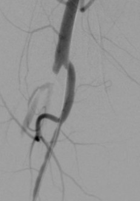
AStenting(2%)
BAngioplasty(6%)
CSurgery(5%)
DCatheter-directed thrombolysis using tissue plasminogen activator(86%)
EPain management(0%)
Your answerD
Correct answerD. Catheter-directed thrombolysis using tissue plasminogen activator
Vital Concept
Digital subtraction angiography guides catheter-directed thrombolysis and monitors clot dissolution. Successful thrombolysis only restores baseline flow, requiring additional intervention to treat underlying stenosis, and prevent re-occlusion. Inflow disease should be corrected before initiating thrombolysis.
Explanation
Catheter-directed thrombolysis using tissue plasminogen activator
The patient is presenting with signs and symptoms of acute limb ischemia. The angiogram shows an abrupt cutoff of the femoral artery (red arrow). Note that there is little background atherosclerotic disease and no collateral vessels, both of which are suggestive of an acute process. The most common etiology is embolic disease, likely from the patient's atrial fibrillation. The precise indication in clinical practice for thrombolytic therapy in the management of acute limb ischemia remains unequivocal, as the procedure is safe, and offers a better limb salvage and mortality rate compared to surgery in the treatment of acute lower limb ischemia.
Incorrect Answers:
A and B. Stenting and angioplasty are treatment options for atherosclerosis, not acute arterial occlusive disease.
C. Thrombolytic therapy such as tPA is used in select cases. Surgery would be an option in patients with contraindications to tissue prothrombin activator, such as high bleeding risks, as the main concern surrounds the reported risk of systemic hemorrhage, especially intra-cerebral hemorrhage.
E. Conservative treatment is not an option, as this is a medical emergency with loss of limb as a likely outcome.
Vital Concept: Digital subtraction angiography guides catheter-directed thrombolysis and monitors clot dissolution. Successful thrombolysis only restores baseline flow, requiring additional intervention to treat underlying stenosis, and prevent re-occlusion. Inflow disease should be corrected before initiating thrombolysis.
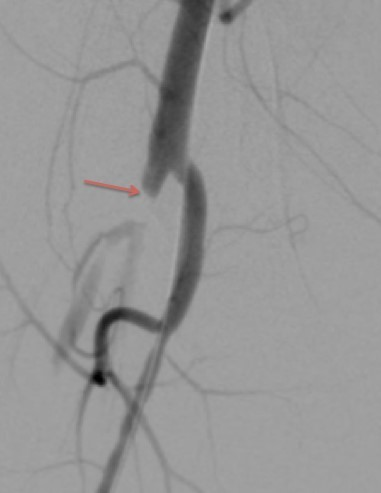
Q13
hard QID 56832
Incorrect
A 75-year-old male presents with chronic back pain and stiffness. Based on the radiographic findings below, what is the most likely diagnosis?
The frontal pelvic radiograph shows bilateral syndesmophytes at multiple lumbar levels and bilateral sacroiliac joint ankylosis. These radiographic findings are classically seen with long-standing ankylosing spondylitis. Earlier signs including sacroiliac edema, and vertebral body erosions may be seen with MRI. Patients with ankylosing spondylitis who sustain trauma should have a lower threshold to obtained cross-sectional imaging due to increased propensity for fracture and often subtle radiographic findings. Treatment options include anti-inflammatories, steroids, and anti-TNF inhibitors.
Incorrect Answers:
A. Diffuse idiopathic skeletal hyperostosis would demonstrate bulky flowing vertebral body osteophytes rather than sacroiliac ankyloses.
B. Psoriatic spondyloarthropathy generally results in asymmetric sacroiliac involvement.
D. Rheumatoid arthritis typically involves the appendicular skeleton and cervical spine, and is also more likely to be associated with asymmetric sacroiliac involvement..
Q14
QID 47194
Correct
A 56-year-old female patient with intermittent lightheadedness and decreased brachial blood pressure on their right side presents for arterial ultrasound, which is depicted below with the vertebral artery. Where is their obstruction?
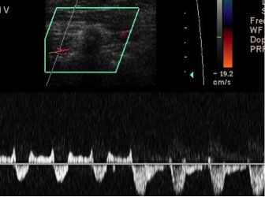
ARight vertebral artery(2%)
BRight subclavian artery(91%)
CLeft subclavian artery(5%)
DRight common carotid artery(2%)
ELeft common carotid artery(0%)
Your answerB
Correct answerB. Right subclavian artery
Vital Concept
Subclavian steal syndrome shows retrograde flow in the vertebral artery on Doppler ultrasound, caused by proximal subclavian artery stenosis that reverses vertebral flow to supply the affected arm.
Explanation
Right subclavian artery
The spectral Doppler image provided of the vertebral artery (specified by the V in the top left corner) shows retrograde flow (blue arrow). One can recognize this as the vertebral artery by its small caliber and by the shadowing caused by the transverse process of the vertebral body (yellow arrow). Given this appearance and the clinical presentation, the diagnosis is subclavian steal syndrome.
This phenomenon is secondary to occlusion or high-grade stenosis of the ipsilateral subclavian artery proximal to the origin of the vertebral artery. The result is diversion of blood from the intracranial circulation to the affected arm. Flow in the ipsilateral vertebral artery is retrograde, and the patient may experience symptoms of cerebral ischemia, especially with muscle activity of the arm.
Subclavian steal may be partial or complete. In partial steal (as in this case), there is reversed flow in the vertebral artery (away from the brain) during systole and forward flow (toward the brain) during diastole. In complete steal there is only retrograde flow.
There is an increased incidence with age and a male predilection with a M:F ratio of 2:1. The left side is more commonly affected, with a L:R ratio of ~3:1.
Incorrect Answers:
A. The vertebral artery is normal in subclavian steal syndrome.
D. and E. The carotid arteries are not affected.
Vital Concept: Subclavian steal syndrome shows retrograde flow in the vertebral artery on Doppler ultrasound, caused by proximal subclavian artery stenosis that reverses vertebral flow to supply the affected arm.
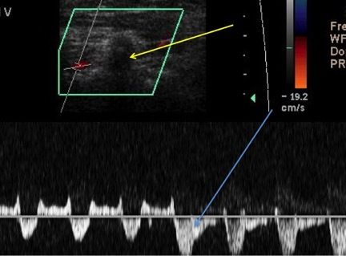
Q15
easy QID 3053
Correct
A 35-year-old male presents with right upper quadrant pain and the clinical team is concerned for acute cholecystitis. A nuclear medicine hepatobiliary scan is requested. Following the intravenous administration of Tc99m-mebrofenin, anterior planar images at 1 frame/minute are acquired for 60 minutes. Which of the following is the next best step regarding imaging of this patient?
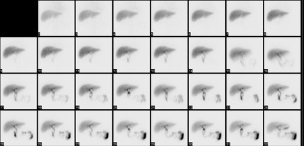
ATerminate the examination as images are diagnostic for acute cholecystitis.(5%)
BTerminate the examination as images reveal normal excretion of the radiotracer.(1%)
CAdminister morphine intravenously and continue imaging the patient.(91%)
DAdminister cholecystokinin (CCK) intravenously and continue imaging the patient.(3%)
ERecommend follow-up ultrasound as imaging findings are equivocal.(0%)
Your answerC
Correct answerC. Administer morphine intravenously and continue imaging the patient.
Vital Concept
Non-visualization of the gallbladder on HIDA scan with normal liver-to-bowel transit suggests acute cholecystitis. Morphine sulfate administration improves diagnostic specificity by increasing biliary pressure—normal gallbladders will fill while obstructed ones remain non-visualized, confirming cystic duct obstruction.
Explanation
Administer morphine intravenously and continue imaging the patient.
Findings are concerning for acute cholecystitis. However, only 60 minutes have elapsed and the study is not yet diagnostic. At this point, a decision is made to either administer morphine intravenously (if not contraindicated) and continue imaging the patient for another 30 to 60 minutes or obtain 3- to 4-hour delayed images without morphine augmentation. Administering morphine induces temporary spasm of the sphincter of Oddi, increasing backpressure within the biliary tree and facilitating filling of the gallbladder in a normal setting. Studies have indicated that morphine augmentation is superior to delayed imaging for diagnosing acute cholecystitis. It should be noted that because all of the tracer is washed out at 60 minutes, reinjection of Tc99m-mebrofenin 1 mCi may be appropriate.
Incorrect Answers:
A. If the gallbladder is not seen within 60 minutes and acute cholecystitis is suspected, delayed images for up to 3 to 4 hours must be acquired to confirm the diagnosis. Alternatively, morphine augmentation can be performed, with imaging continued for another 30 to 60 minutes.
B. Non-visualization of the gallbladder by 60 minutes is not a normal finding, and further imaging is required.
D. CCK (actually sincalide, a cholecystokinetic agent) is given for two reasons: to empty the gallbladder prior to initiating a cholescintigraphy examination, or to calculate gallbladder ejection fraction once the gallbladder is filled (to evaluate for dyskinesia). Neither of these scenarios apply in this case.
E. Ultrasound may be considered as an adjunctive radiologic study to evaluate for acute cholecystitis. However, in this case, the hepatobiliary scan has already been initiated and more information can be gleaned before the examination is terminated.
Vital Concept: Non-visualization of the gallbladder on HIDA scan with normal liver-to-bowel transit suggests acute cholecystitis. Morphine sulfate administration improves diagnostic specificity by increasing biliary pressure—normal gallbladders will fill while obstructed ones remain non-visualized, confirming cystic duct obstruction.
Q16
hard QID 47109
Incorrect
A 66-year-old female patient with a history of lightheadedness presents for doppler ultrasound evaluation of their carotid arteries. The appearance, shown in the mid-portion of the CCA artery on the doppler image below, is secondary to which of the following?
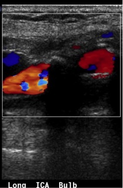
AArtifact(77%)
B<50% stenosis(1%)
C70 to 99%(2%)
DNear-total occlusion(13%)
ETotal occlusion(7%)
Your answerD
Correct answerA. Artifact
Explanation
Artifact
The image of the internal carotid artery demonstrates a focal apparent lack of Doppler flow (red arrow), which is seen in association with mural atherosclerotic calcification (yellow arrow). Thus, this is a shadowing artifact mimicking a total occlusion. The degree of stenosis cannot be accurately assessed. With regard to the internal carotid artery, the flux at the point of maximal stenosis in the ICA must equal the flux distally at the point of normal luminal diameter. Elevation of the internal carotid artery peak systolic velocity has been shown to be the single most useful Doppler sonographic parameter for detecting hemodynamically significant carotid stenosis and for selecting patients for carotid endarterectomy. The traditional grading system based on ICA PSV is as follows:
< 50% stenosis: PSV < 125 cm/s
50% to 69% stenosis: PSV 125-229 cm/s ≥
70% to 99% stenosis: PSV ≥ 230 cm/s.
In near-total occlusion, one sees high/low-velocity trickle flow, with a very low peak systolic velocity that is close to zero. In 2023, the IAC recommended increase of threshold for 50% stenosis to 180 cm/s from 125 cm/s.
Incorrect Answers:
B, C, D, E are incorrect according to the explanation above.
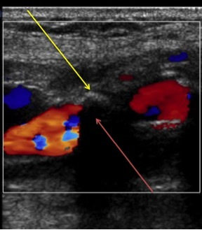
Q17
hard QID 2871
Correct
A 61-year-old female presents with headaches. Which of the following is most closely correlated with the findings displayed below?
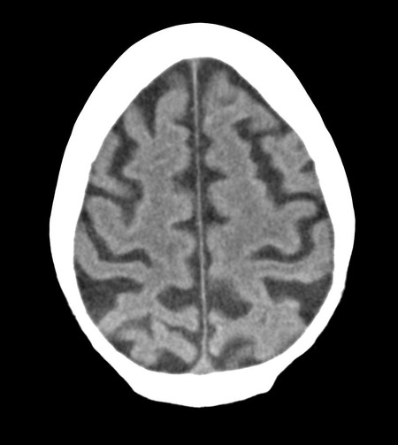
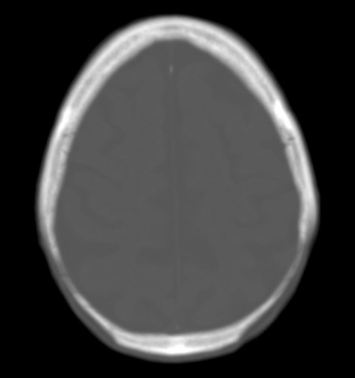
APostoperative changes of no clinical significance(2%)
BOsteoporosis(64%)
CAcute trauma(27%)
DNeoplastic in origin, typically low-grade(6%)
ENeoplastic in origin, typically high-grade(1%)
Your answerB
Correct answerB. Osteoporosis
Vital Concept
Biparietal osteodystrophy represents a regional manifestation of systemic osteoporotic bone loss, where disrupted bone metabolism becomes clinically apparent in the vulnerable parietal cortical bone. The condition should prompt comprehensive evaluation for underlying osteoporosis and associated metabolic bone disorders requiring systemic treatment.
Explanation
Osteoporosis
The bilateral symmetric thinning pattern of the parietal bones (as seen in this case) reflects systemic bone metabolism dysfunction characteristic of osteoporosis. The parietal bones are particularly vulnerable because they consist predominantly of cortical bone with minimal trabecular support, making them susceptible to cortical thinning when bone remodeling becomes imbalanced, as in the case of osteoporosis. Osteoporosis involves increased bone resorption exceeding bone formation, leading to net bone loss throughout the skeleton. The parietal cortical bone demonstrates this process most visibly due to its naturally thinner baseline architecture compared to other skull regions. The preserved underlying brain anatomy indicates benign bone remodeling rather than destructive pathology, and the symmetric distribution reflects the systemic nature of metabolic bone disease rather than focal processes.
Incorrect Answers:
A. C. The bilateral symmetric appearance is less likely to be associated with surgery or acute trauma which would be more likely to be focal and unilateral.
D. E. The bilateral symmetric parietal thinning is characteristic not neoplastic in origin.
Vital Concept: Biparietal osteodystrophy represents a regional manifestation of systemic osteoporotic bone loss, where disrupted bone metabolism becomes clinically apparent in the vulnerable parietal cortical bone. The condition should prompt comprehensive evaluation for underlying osteoporosis and associated metabolic bone disorders requiring systemic treatment.
Q18
QID 86024
Correct
A 46-year-old man is evaluated for refractory hypertension. His blood pressure readings at home have been consistently elevated, and he has had several episodes of flushing and chest discomfort over the past few months. During his last episode, his blood pressure was 172/94 mm Hg. He reports good compliance with three different antihypertensive medications. His blood pressure today is 152/88 mm Hg. Physical examination is unremarkable. Laboratory values reveal elevated plasma epinephrine and 24-hour urine metanephrines. An abdominal CT scan shows a 2 cm left adrenal mass. What is the most appropriate next step in the evaluation of this patient?
AAbdominal ultrasound(2%)
BI-123 meta-iodobenzylguanidine (MIBG) scan(80%)
CMagnetic resonance imaging (MRI) of the abdomen(14%)
Approximately 10% of pheochromocytomas are bilateral or metastatic, so an I-123 MIBG or gallium-68 DOTATATE scan is needed to identify any additional lesions. While a CT scan can identify an adrenal lesion, it cannot assess functionality or locate metastatic pheochromocytomas as effectively as a radioisotope scan.
Explanation
I-123 meta-iodobenzylguanidine (MIBG) scan
This patient most likely has a pheochromocytoma, a catecholamine-secreting tumor that derives from chromaffin cells in the adrenal medulla. Patients present with the classic triad of headaches, sweating, and tachycardia. A useful mnemonic for patients with a Pheochromocytoma is the 5 Ps: Pressure (hypertension), Pain, Perspiration, Palpitations, and Pallor. In addition, the rule of 10s also applies to patients with pheochromocytoma: 10% are malignant, bilateral, extra-adrenal, contain calcifications, and occur in children. Diagnosis is made with 24-hour urinary fractionated catecholamines and metanephrines or plasma-fractionated metanephrines.
Approximately 10% of pheochromocytomas are bilateral or metastatic, so an I-123 meta-iodobenzylguanidine (MIBG) or a gallium-68 DOTATATE scan is needed to identify any additional lesions. While a CT scan can identify an adrenal lesion, it cannot assess functionality or locate metastatic pheochromocytomas as effectively as a radioisotope scan. Initial treatment is with phenoxybenzamine, an irreversible, long-acting, nonspecific alpha-adrenergic blocking agent that is used to control blood pressure and prevent arrhythmias.
Incorrect Answers:
A. The adrenal glands are generally not well evaluated on ultrasound.
C. While an MRI of the abdomen can help determine the anatomy of the adrenals, it will not indicate which adrenal is hyperfunctional or rule out functional metastases. This study would not add any additional information at this point in the work up.
D. Radioisotope imaging of the abdomen is required to identify additional lesions and evaluate which gland is hyperfunctioning. A head CT would not assist i specific work up of the adrenal lesion and would not be an appropriate next step in this context.
Vital Concept: Approximately 10% of pheochromocytomas are bilateral or metastatic, so an I-123 MIBG or gallium-68 DOTATATE scan is needed to identify any additional lesions. While a CT scan can identify an adrenal lesion, it cannot assess functionality or locate metastatic pheochromocytomas as effectively as a radioisotope scan.
Q19
easy QID 2886
Correct
Which of the following MR imaging artifacts is seen in the left hepatic lobe?
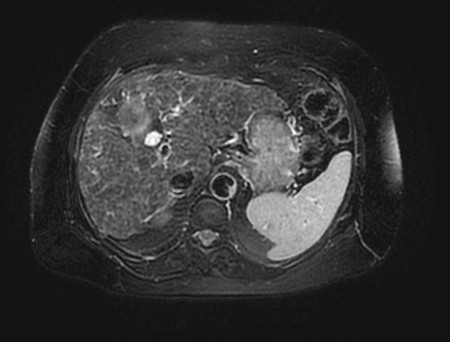
AMoiré fringe(2%)
BPulsation artifact(93%)
CWrap-around artifact(2%)
DChemical shift artifact(3%)
Your answerB
Correct answerB. Pulsation artifact
Vital Concept
Pulsation artifacts always propagate in the phase-encoding direction, creating ghost copies of moving structures (like the aorta) that appear as faint replicas at regular intervals. This is because phase-encoding is the slowest part of MRI data acquisition, making it most susceptible to motion corruption, while frequency-encoding occurs rapidly and is relatively motion-resistant.
Explanation
Pulsation artifact
The artifact seen in the lateral left hepatic lobe is the result of aortic pulsation. The pulsation of vascular structures, like other forms of motion, leads to "ghosting" in the phase encoding direction.
Incorrect Answers:
A. The alternating light/dark curved lines characteristic of Moiré fringe artifact are not seen in this image.
C. Wrap-around artifact arises when the field of view is smaller than the object of interest in the image and the portions that are beyond the field of view are projected to the other side of the image.
D. Chemical shift artifact is due to variations in resonance frequencies between fat and water.
Vital Concept: Pulsation artifacts always propagate in the phase-encoding direction, creating ghost copies of moving structures (like the aorta) that appear as faint replicas at regular intervals. This is because phase-encoding is the slowest part of MRI data acquisition, making it most susceptible to motion corruption, while frequency-encoding occurs rapidly and is relatively motion-resistant.
Q20
QID 5030
Correct
Which of the following is true regarding continuous wave (CW) Doppler?
ATwo crystals within the probe are required.(50%)
BThe ability to resolve depth is highly accurate, compared with pulsed wave Doppler.(10%)
CCW Doppler is more subject to aliasing versus pulsed Doppler.(16%)
DFrequency resolution of CW Doppler is less accurate than pulsed wave Doppler.(12%)
ECW Doppler has poorer performance at very high velocities, compared with pulsed wave Doppler.(12%)
Your answerA
Correct answerA. Two crystals within the probe are required.
Vital Concept
Continuous wave Doppler uses two separate crystals within the probe. One crystal is constantly transmitting while the second is continuously recording.
Explanation
Two crystals within the probe are required.
Continuous wave Doppler requires two crystals in the probe because it transmits and receives ultrasound simultaneously. One crystal continuously sends the ultrasound beam while the second crystal continuously receives the reflected signals. A single crystal cannot perform both functions simultaneously because the strong transmitted signal would overwhelm the weak received echoes. This two-crystal design allows detection of very high velocities without aliasing limitations.
Incorrect Answers:
B. The ability to resolve depth is less accurate in continuous wave Doppler, compared with pulsed wave Doppler.
C. Pulsed wave Doppler is more subject to aliasing versus continuous wave Doppler.
D. The benefits of continuous wave Doppler include better frequency resolution leading to more accurate and higher velocity measurements.
E. Pulsed wave Doppler has poorer performance at very high velocities compared to continuous wave Doppler.
Vital Concept: Continuous wave Doppler uses two separate crystals within the probe. One crystal is constantly transmitting while the second is continuously recording.
Q21
moderate QID 20800
Correct
A 2-month-old female patient with lumbar myelomeningocele presents with enlarging head circumference. The below magnetic resonance (MR) images were obtained. Which of the following is the most likely diagnosis?
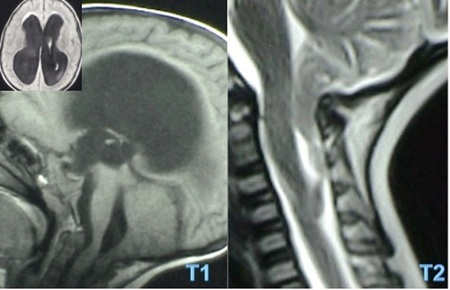
ADandy-Walker malformation(1%)
BNormal congenital variant(0%)
CChiari 1 malformation(7%)
DChiari 2 malformation(88%)
EChiari 3 malformation(4%)
Your answerD
Correct answerD. Chiari 2 malformation
Explanation
Chiari 2 malformation
The history and MR findings constitute a Chiari 2 malformation (a.k.a. Arnold-Chiari malformation). Chiari 2 involves a neural tube defect (usually lumbar myelomeningocele), small posterior fossa with inferior herniation of the hindbrain (blue arrow), tectal beaking (blue arrowhead), and a towering appearance of the cerebellum (white arrow), which appears to wrap around the midbrain. Numerous other CNS abnormalities are often present (e.g., syrinx, callosal dysgenesis, rhombencephalosynapsis, etc.).
Incorrect Answers:
A. Dandy-Walker malformation (DWM) is a congenital abnormality that involves the posterior fossa. DWM, however, involves a large posterior fossa cyst in communication with the fourth ventricle, agenesis of the cerebellar vermis, and torcular-lambdoid inversion, none of which are seen in this case.
B. Low-lying cerebellar tonsils can be a normal variant in asymptomatic patients if cerebellar descent is less than 5 mm below the foramen magnum. The presence of extensive hindbrain descent and marked hydrocephalus in this case are not within normal limits.
C. The images below include extension of the cerebellar tonsils though the foramen magnum (blue arrow), a feature of Chiari 1 malformation, but the vertically oriented towering cerebellum (white arrow), tectal beaking (blue arrowhead), and hydrocephalus (asterisk) suggest an alternative diagnosis.
E. Chiari 3 malformation does involve the findings described above, including a neural tube defect, small posterior fossa with vertically-oriented towering cerebellum (white arrow), and tectal beaking (blue arrowhead). In addition, however, Chiari 3 involves a cervico-occipital meningoencephalocele, which is not seen in this case.
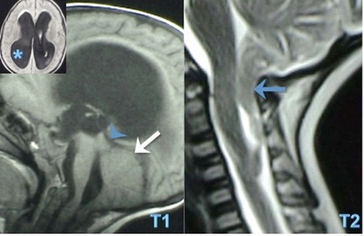
Q22
moderate QID 43877
Correct
A 46-year-old patient with longstanding wrist pain undergoes the MRI shown. Injury to which of the following structures precipitated their arthritis?
The coronal gradient echo and proton density MR images through the wrist show marked widening of the scapholunate interval (pink arrow) with complete disruption of the scapholunate interosseous ligament (yellow arrow). Some of the ligament's ulnar fibers can be seen (blue arrow). There is resultant proximal migration of the capitate (purple arrow), as well as advanced radio-scaphoid joint arthritis (orange arrow). This constellation of findings is that of scapholunate advanced collapse, or SLAC wrist. The precipitating injury is typically either scapholunate interosseous ligament and/or scaphoid nonunion (scaphoid nonunion advanced collapse – or SNAC wrist).
Wrist malalignment results from untreated scapholunate ligament injury because of widening of the scapholunate interval, volar rotatory subluxation of the scaphoid, and progressive chondromalacia and osteoarthritis.
Incorrect Answers:
A. The triangular fibrocartilage complex is implicated in ulnar-sided wrist pain. It is a stabilizer of the distal radioulnar joint, as well as the anatomic connection between the ulna and proximal carpal row.
B. The lunotriquetral interosseous ligament is intact. It is not implicated in SNAC or SLAC wrist but rather is seen in cases of volar intercalated segmental instability (VISI).
D and E. The triquetro-hamato-capitate ligament and scaphocapitate ligament comprise the arcuate ligament complex, an important volar extrinsic wrist stabilizer. They are implicated in palmar midcarpal instability.
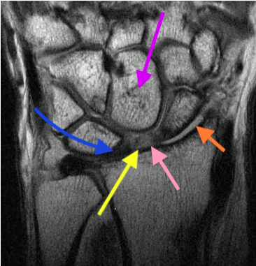
Q23
easy QID 56298
Correct
An 8-year-old boy presents with gum-bleeding, severe bilateral leg pain, and difficulty ambulating. MRI images at the time of presentation (top row) and 8 months following treatment (bottom row) are provided below. Which of the following is the most likely etiology of findings denoted by the arrows on initial images (use Figure/Media button for better visualization)?
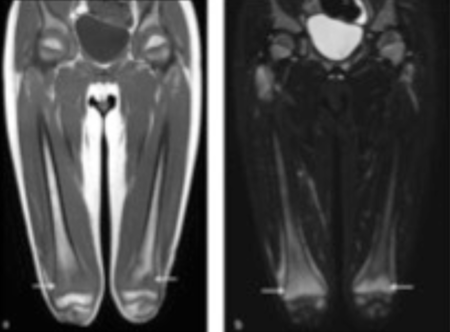
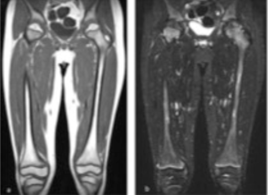
AStress fractures(1%)
BVitamin deficiency(95%)
CChild abuse(0%)
DMultifocal osteomyelitis(3%)
Your answerB
Correct answerB. Vitamin deficiency
Explanation
Vitamin deficiency
Figure 1 – Coronal T1 (a) and T2 (b) images show symmetric patchy low T1/high T2 signal involving the distal femoral metaphysis.
Figure 2 – Coronal T1 (a) and T2 (b) images at 8 months following treatment show resolution of marrow signal abnormality.
Skeletal manifestations of Vitamin C deficiency include generalized osteopenia, scorbutic rosary, subperiosteal hemorrhage, and hemarthrosis. The above pre-treatment MRI findings of bone marrow edema likely reflect micro-trauma and/or hemorrhage related to impaired collagen synthesis in the setting of vitamin C deficiency. Preferential metaphyseal involvement is typical due to its high demand for type 1 collagen. MRI is the most sensitive modality in early stages of disease, at which time radiographs are usually normal.
Incorrect Answers:
A. Stress fractures demonstrate linear low signal perpendicular to the bone long axis in addition to bone marrow edema.
C. Radiologic findings in child abuse include metaphyseal corner fractures. No fractures are evident in the images provided.
D. Although metaphyseal patchy bone marrow edema may be seen in osteomyelitis, the symmetric appearance and clinical findings go against this diagnosis.
Q24
hard QID 5032
Incorrect
Which of the following is closest to the estimated absorbed radiation dose to a fetus from a routine abdomen/pelvis computed tomography (CT) scan?
A5 mGy(24%)
B25 mGy(50%)
C50 mGy(2%)
D5 mSv(15%)
E25 mSv(8%)
F50 mSv(1%)
Your answerA
Correct answerB. 25 mGy
Explanation
25 mGy
From Radiographics (Fetal Dosimetry at CT: A Primer): "The mean fetal dose at single-phase abdominopelvic CT is approximately 20 mGy and is seldom higher than 50 mGy, unless multiple phases are used. For most patients, the fetal dose is lower than the thresholds for tissue effects." Therefore, 25 mGy is the best answer of those given.
Incorrect Answers:
A. C. The estimated fetal dose for a routine abdomen/pelvis CT is closest to 25 mGy (not 5 and not 50). This number may continue to decrease in the future with newer iterative reconstruction techniques, but 25 mGy is the number worth remembering.
D. E. F. Absorbed dose is measured in Gy, not Sv. Equivalent dose and effective dose are measured in Sv.
Q25
hard QID 45257
Correct
Which of the following determines the pixel size in computed tomography imaging plates?
ADynamic range(19%)
BSpeed class(4%)
CSampling frequency(38%)
DMatrix size(39%)
Your answerD
Correct answerD. Matrix size
Vital Concept
In CT, pixel size is primarily determined by the field of view (FOV) and the image matrix size.
Explanation
Matrix size
In CT, the pixel size is determined by Matrix size and FOV (field of view)
Incorrect Answers:
A. Dynamic range is related to contrast resolution, not pixel size.
B. The speed class is more relevant in digital radiography, not directly related to pixel size.
C. Sampling frequency is related with spatial resolution and aliasing risk, not pixel size directly.
Vital Concept: In CT, pixel size is primarily determined by the field of view (FOV) and the image matrix size.
Q26
moderate QID 20597
Correct
An adolescent male returns for follow-up CT after a plain radiograph incidentally demonstrated a mass in the chest. The image below is most likely which of the following?
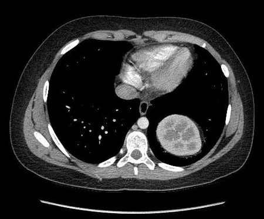
AAn AV malformation(0%)
BA hamartoma(7%)
CA thoracic kidney(93%)
DAbscess(0%)
EAspergilloma(0%)
Your answerC
Correct answerC. A thoracic kidney
Explanation
A thoracic kidney
This image demonstrates a thoracically-located kidney. These can be associated with diaphragmatic hernias.
Incorrect Answers:
A. An AV malformation on CT scan would likely show a serpentine mass visibly connected to surrounding blood vessels.
B. A hamartoma on CT scan may reveal more visible areas of calcification and fat, which may suggest the diagnosis.
D. An abscess would have a visible fibrous capsule with low attenuation. Surrounding inflammatory changes may be noted.
E. Aspergilloma classically is described as possessing the Monod sign, describing a soft tissue mass within a cavity encircled by a crescent of air.
Q27
moderate QID 2839
Correct
A 34-year-old male was assaulted and presents with severe facial pain. Pain is exacerbated with chewing. On clinical exam he has severe ecchymosis of the cheeks and facial pain with palpation. Further clinical exam was not possible due to intoxication. Computed tomography of the facial bones was performed and surface rendered images were created. Evaluation of the non-rendered images demonstrate extension of the fracture through the pterygoid plates (not shown). Which of the following is the most likely diagnosis in this patient?
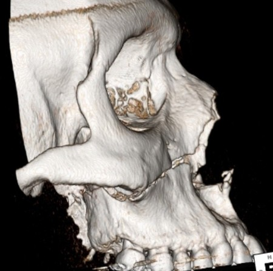
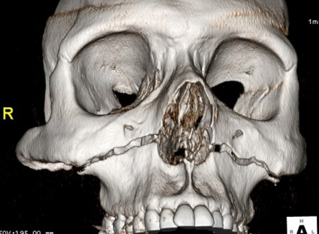
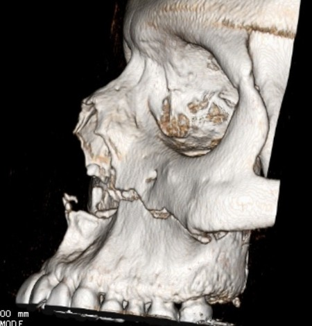
ALeFort 1 fracture(84%)
BLeFort 2 fracture(11%)
CLeFort 3 fracture(3%)
DZygomaticomaxillary fracture(1%)
ENaso-orbitoethmoid fracture(0%)
Your answerA
Correct answerA. LeFort 1 fracture
Vital Concept
In a LeFort 1 fracture, there is no superior extension through the orbital floor (which is seen in LeFort 2) or through the medial and lateral orbits and zygomatic arches (as is seen in LeFort 3). On physical exam, the LeFort 1 fracture will demonstrate mobility of the maxillary teeth and palate but not of the nose or zygomas. Multiple LeFort fractures may coexist and the Lefort level may not be symmetric (e.g., a patient may have LeFort 1 and 2 on the right and LeFort 1, 2, and 3 on the left).
Explanation
LeFort 1 fracture
LeFort fractures refer to a family of fractures where progressively larger portions of the maxilla are separated from the skull base anteriorly and posteriorly. The pterygoid plates must be fractured to separate the maxilla from the skull base posteriorly ("pterygomaxillary disjunction"). Anteriorly, if the fractures separate the hard palate, it is a LeFort 1.
This case, which shows separation of the hard palate on the anterior view and extension toward the pterygoid plates on the lateral views; since extension of the fracture through the pterygoid plates is given, this is a case of LeFort 1. On multiplanar reformatted images, this type of fracture can best be appreciated on coronal view. Pterygomaxillary disjunction is seen posteriorly, and anteriorly there are fractures bilaterally through the anterior, medial, and posterolateral maxillary sinus walls and the nasal septum.
Incorrect Answers:
B. If the fracture disconnects the palate plus the midface, it is characterized as a LeFort 2 fracture.
C. If the fracture disconnects the entire face, it is characterized as a LeFort 3 fracture.
D. Zygomaticomaxillary fractures involve fracture and detachment of the zygoma.
E. Naso-orbitoethmoid fractures are smash fractures of the upper central face.
Vital Concept: In a LeFort 1 fracture, there is no superior extension through the orbital floor (which is seen in LeFort 2) or through the medial and lateral orbits and zygomatic arches (as is seen in LeFort 3). On physical exam, the LeFort 1 fracture will demonstrate mobility of the maxillary teeth and palate but not of the nose or zygomas. Multiple LeFort fractures may coexist and the Lefort level may not be symmetric (e.g., a patient may have LeFort 1 and 2 on the right and LeFort 1, 2, and 3 on the left).
Q28
easy QID 24481
Correct
Which of the following would be considered a stochastic effect?
ASterility(1%)
BCataracts(2%)
CCancer(95%)
DRadiation sickness(1%)
ESkin erythema(2%)
Your answerC
Correct answerC. Cancer
Vital Concept
Stochastic effects follow the linear no-threshold model where any radiation dose carries cancer risk with probability increasing linearly with dose but severity remaining constant, contrasting with deterministic effects that require threshold doses and show dose-dependent severity.
Explanation
Cancer
Stochastic effects represent radiation-induced biological consequences where the probability of occurrence increases with radiation dose, but the severity remains independent of the dose received. These effects follow the linear no-threshold model, meaning there is no safe threshold dose below which effects cannot occur. Any radiation exposure theoretically carries some risk. The primary stochastic effects are carcinogenesis and genetic/hereditary effects, which may manifest years to decades after exposure. This contrasts sharply with deterministic effects (tissue reactions), which have clear dose thresholds below which no effects occur and where severity directly correlates with dose magnitude. Examples include skin erythema, cataracts, and sterility. The LNT model remains controversial in radiation protection, with some scientists arguing that low-dose radiation effects may not follow a linear relationship and that adaptive cellular responses or hormesis might occur at very low doses, though regulatory bodies continue to use LNT for radiation protection standards due to its conservative approach to public safety.
Incorrect Answers:
A. B.D. E. Deterministic effects have a clearly defined threshold above which the provider will see the effect and below which theywill not. These include sterility, cataracts, radiation sickness, and skin erythema.
Vital Concept: Stochastic effects follow the linear no-threshold model where any radiation dose carries cancer risk with probability increasing linearly with dose but severity remaining constant, contrasting with deterministic effects that require threshold doses and show dose-dependent severity.
Q29
easy QID 4969
Correct
A 33-year-old female presents for workup of refractory hypertension. The following angiogram is obtained. Which of the following is the treatment of choice?
Anti-hypertensive medications are usually the initial treatment for management of renovascular hypertension. If the patient does not respond to pharmacologic therapy, balloon angioplasty is the next step in management.
Explanation
Balloon angioplasty
The beaded appearance on angiography indicates fibromuscular dysplasia (FMD), and percutaneous balloon angioplasty is the optimal first-line treatment for FMD causing refractory hypertension. FMD involves compliant fibromuscular tissue that responds well to balloon dilation alone, unlike atherosclerotic stenosis which often requires stenting. Stenting is reserved for balloon angioplasty failure or complications, while surgical intervention is reserved for cases with multiple branch vessel involvement or associated macroaneurysms where percutaneous approaches may be less effective.
Incorrect Answers:
A. The use of stents is not advocated as primary treatment nor is bypass graft, as balloon angioplasty has a >95% response rate.
C. Surgical bypass graft is not a treatment choice in fibromuscular dysplasia.
D. E. ACE inhibitors and calcium channel blockers are used in medical management of renovascular hypertension. Balloon angioplasty is the next step in management when the patient has not responded to optimal pharmacologic therapy.
Vital Concept: Anti-hypertensive medications are usually the initial treatment for management of renovascular hypertension. If the patient does not respond to pharmacologic therapy, balloon angioplasty is the next step in management.
Q30
hard QID 37629
Correct
Which of the following is considered a mild contrast reaction?
ADiffuse urticaria(14%)
BNasal congestion, sneezing, and conjunctivitis(73%)
CWheezing with mild hypoxia(1%)
DDiffuse erythema with stable vital signs(11%)
Your answerB
Correct answerB. Nasal congestion, sneezing, and conjunctivitis
Vital Concept
Signs and symptoms of a moderate contrast reaction are more pronounced than a mild reaction and commonly require medical management.
Explanation
Nasal congestion, sneezing, and conjunctivitis
The ACR Manual on Contrast Media classifies acute contrast reactions as follows:
Mild: Signs and symptoms are self-limited without evidence of progression.
Moderate: more pronounced than a mild reaction and commonly require medical management.
Severe: Signs and symptoms are often life-threatening and can result in permanent morbidity or death if not managed appropriately
Nasal congestion, sneezing, and conjunctivitis is considered a mild contrast reaction, while the other reactions would be categorized as moderate reactions. Examples of mild allergic-like reactions include limited urticaria or pruritis, limited cutaneous edema, limited “itchy” or “scratchy” throat, nasal congestion, and sneezing, conjunctivitis, or rhinorrhea.
Cardiopulmonary arrest is a nonspecific end-stage result of many types of severe reactions. Pulmonary edema is a rare severe reaction. Cardiogenic pulmonary edema can occur in patients with limited cardiac reserve. Non-cardiogenic pulmonary edema can occur in patients with normal cardiac function and can be allergic or physiologic. Examples of severe allergic-like reactions include diffuse edema or facial edema with dyspnea, diffuse erythema with hypotension, laryngeal edema with stridor and/or hypoxia, wheezing or bronchospasm with significant hypoxia, and anaphylactic shock (hypotension and tachycardia).
Incorrect Answers:
A. C.D.
Examples of moderate allergic-like reactions include diffuse urticaria or pruritus, wheezing or bronchospasm with mild or no hypoxia, diffuse erythema with stable vital signs, facial edema without dyspnea, and throat tightness of hoarseness without dyspnea.
Vital Concept: Signs and symptoms of a moderate contrast reaction are more pronounced than a mild reaction and commonly require medical management.
Q31
easy QID 22555
Correct
A 4-month-old female patient presents for evaluation of seizures and respiratory difficulty. Which of the following is the diagnosis?
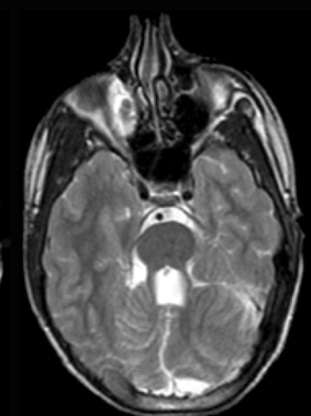
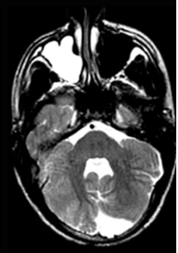
ADandy-Walker malformation(5%)
BJoubert syndrome(90%)
CRhombencephalosynapsis(3%)
DHoloprosencephaly(0%)
EPosterior fossa arachnoid cyst(2%)
Your answerB
Correct answerB. Joubert syndrome
Vital Concept
Joubert syndrome shows the pathognomonic molar tooth sign on axial MRI with thickened and elongated superior cerebellar peduncles and abnormally deep interpeduncular fossa. Vermian hypoplasia with dysplastic remnants is always present. Fourth ventricle distortion and enlargement occurs secondary to vermian abnormalities.
Explanation
Joubert syndrome
Joubert syndrome is a hindbrain malformation characterized by abnormal formation of the cerebellar vermis (red arrow) and absent decussation of superior cerebellar peduncle, pontine, and corticospinal tracts. The cerebellar vermis demonstrates abnormal deep sagittal clefting, and there is a characteristic “molar tooth” appearance of the midbrain (green arrows). Additionally, due to abnormal vermian cleft formation, the fourth ventricle demonstrates a characteristic “bat wing” appearance (blue arrows). Clinically, these patients often present with seizures and alternating apnea and hyperpnea in the neonatal period. On clinical examination, they often have large, prominent foreheads, epicanthal folds, upturned noses, and protruding tongues. They may additionally have retinal anomalies such as pigmented retinopathy coloboma formation.
Incorrect Answers:
A. Dandy-Walker malformation (DWM) is a congenital anomaly thought to arise from abnormal development of the rhombencephalon with resultant abnormal expansion of the fourth ventricle which inhibits normal caudal migration of the tentorium and torcular herophili. The result is a classic configuration of the posterior fossa with three key features: Marked vermian hypoplasia or agenesis, cystic dilatation of the fourth ventricle, “Torcular-lambdoid inversion.” The torcular lies too far superiorly, cranial to the lambdoid suture, normally it should lie below the lambdoid. There are several other CNS and non-CNS anomalies associated with DWM, including cleft lip and palate, grey matter heterotopias and cortical dysplasias, callosal dysgenesis, PHACES syndrome (Posterior fossa malformation, hemangiomas and arterial malformations, cardiac defects, eye anomalies, sternal cleft), cardiac malformations, and genitourinary abnormalities. Life expectancy tends to follow the severity of these associated malformations.
C. Rhombencephalosynapsis is characterized by fusion of the cerebellar hemispheres and absence of a midline vermis. The “molar tooth” appearance should dissuade this diagnosis.
D. Holoprosencephaly is the diagnosis when the finding is a single midline ventricle. It is due to failure of hemispheric cleavage and may be associated with other findings including facial defects such as hypotelorism and midface hypoplasia as well as cyclopia, presence of a proboscis, single maxillary central incisor, among other midline facial defects. The cerebral falx is absent, and there is frequently an azygous anterior cerebral artery. Patients are typically markedly mentally retarded. There are varying degrees of holoprosencephaly. Alobar holoprosencephaly is the most severe, with no separation of hemispheres and a single central ventricle. Semilobar type has separation of the temporal lobes. Lobar types typically have a single frontal lobe with separation of the posterior brain structures and presence of the splenium of the corpus callosum.
E. Posterior fossa arachnoid cysts can be difficult to differentiate from mega cisterna magna but typically appear as extra-axial lesions producing mass effect on the adjacent brain. They follow CSF signal on T1- and T2-weighted imaging.
Vital Concept: Joubert syndrome shows the pathognomonic molar tooth sign on axial MRI with thickened and elongated superior cerebellar peduncles and abnormally deep interpeduncular fossa. Vermian hypoplasia with dysplastic remnants is always present. Fourth ventricle distortion and enlargement occurs secondary to vermian abnormalities.
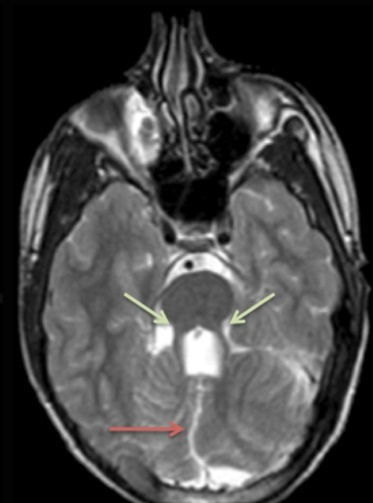
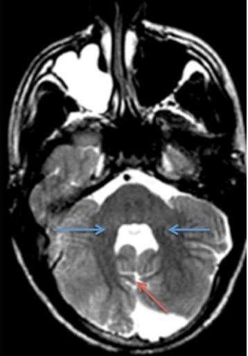
Q32
moderate QID 2675
Correct
A patient undergoes core needle biopsy for architectural distortion seen on screening mammography. Pathologic analysis shows a radial scar. Which of the following is the best next step in management based on the Third International Consensus Conference recommendations?
AFollow up in 6 months(8%)
BFollow up in 12 months(6%)
CRepeat core biopsy(1%)
DVacuum-assisted biopsy or vacuum-assisted excision and active surveillance(85%)
Your answerD
Correct answerD. Vacuum-assisted biopsy or vacuum-assisted excision and active surveillance
Explanation
Vacuum-assisted biopsy or vacuum-assisted excision and active surveillance
Radial scars, also called complex sclerosing lesions, are a pathologic diagnosis, usually discovered incidentally when a breast mass or radiologic abnormality is removed or biopsied. Occasionally, radial scars are large enough to be detected by mammography, which cannot reliably differentiate between these lesions and spiculated carcinoma. Radial scars are characterized microscopically by a fibroelastic core with radiating ducts and lobules. There is some evidence that radial scars may be premalignant lesions, meaning that they can slowly progress from scar to hyperplasia to carcinoma over time.
There is ongoing controversy about the need for surgical excision when radial scars are found on core biopsy. In 2023, the Third International Consensus Conference recommended vacuum-assisted biopsy (VAB) or vacuum-assisted excision (VAE) and active surveillance after percutaneous diagnosis of radial scar.
Incorrect Answers:
A. B. C. As stated above, excisional biopsy is the current recommendation for radial scars.
Q33
moderate QID 44070
Correct
A 69-year-old female patient presents with vaginal bleeding. Which of the following is/are risk factor(s) for their condition?
ANulliparity(7%)
BObesity(3%)
CInfertility(1%)
DPolycystic ovarian disease(0%)
EAll of the above(88%)
Your answerE
Correct answerE. All of the above
Vital Concept
Endometrial cancer demonstrates intermediate-to-low T2 signal intensity relative to hyperintense normal endometrium, with restricted diffusion and hypoenhancement on contrast-enhanced imaging. Risk factors include obesity, diabetes, unopposed estrogen exposure, and Lynch syndrome.
Explanation
All of the above
The sagittal T2 MRI shows a relatively hyperintense mass (blue arrow) compared to the background myometrium. Note that the T2 hypointense junctional zone (yellow arrow) is disrupted by the mass (red arrow). This can also be seen on the post-contrast fat-saturated pelvic MRI, as well as invasion of the myometrium. This is highly suspicious for endometrial carcinoma. Endometrial cancer is seen in postmenopausal women, more often white women, with a peak age range from 55 to 70 years. Unopposed estrogen is the primary risk factor, as is seen in nulliparity, obesity, infertility, polycystic ovarian disease, and hormone replacement. It frequently presents, as in this case, as postmenopausal bleeding.
Vital Concept: Endometrial cancer demonstrates intermediate-to-low T2 signal intensity relative to hyperintense normal endometrium, with restricted diffusion and hypoenhancement on contrast-enhanced imaging. Risk factors include obesity, diabetes, unopposed estrogen exposure, and Lynch syndrome.
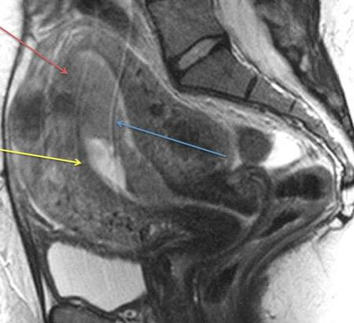
Q34
moderate QID 2933
Correct
Which of the following artifacts does the magnetic resonance image (MRI) image show?
Dielectric effect results from central signal loss at 3 T when radiofrequency wavelength approximates patient diameter, creating standing wave interference that prevents central spin excitation. The artifact can be reduced by using dielectric pads between patient and coil, or by preferentially imaging large patients, pregnant patients, and those with ascites at 1.5 T instead of 3 T.
Explanation
Dielectric (conductivity) artifact
The image shows substantial signal loss in the mid abdomen, which results from dielectric (conductivity) artifact. This most commonly occurs in the setting of fluid, such as ascites or amniotic fluid, when the incident external radiofrequency (RF) field induces an electric current in the fluid, generating a magnetic field in opposition to the main field.
This artifact is typically seen at 3 T and can be eliminated by repeating the scan at a lower field strength.
Incorrect Answers:
A. Susceptibility artifact can cause signal loss, but typically is associated with geometric distortion, which is not present.
B. Zipper artifact is related to spurious bands of noise in the phase-encoded direction resulting in a characteristic noise band across all images. A common source is a spurious RF signal in the room.
D. Gibbs, or truncation, artifact is due to under sampling of k-space in the phase-encoded direction resulting in characteristic repeating lines in the phase-encoded direction at high-contrast interfaces.
E. Motion artifact is not present.
Vital Concept: Dielectric effect results from central signal loss at 3 T when radiofrequency wavelength approximates patient diameter, creating standing wave interference that prevents central spin excitation. The artifact can be reduced by using dielectric pads between patient and coil, or by preferentially imaging large patients, pregnant patients, and those with ascites at 1.5 T instead of 3 T.
Q35
hard QID 2898
Correct
During a fluoroscopy procedure, the operator increases the kVp from 50 to 85. Which of the following is true?
AThere is improvement in image contrast.(3%)
BThe radiation dose to the patient per unit time is higher at 85 kVp.(10%)
CThe proportion of Compton to photoelectric effect is increasing.(65%)
DThe average energy of the beam decreases.(1%)
EThe automatic brightness control (ABC) will adjust the mAs to maintain the same level of radiation dose per unit time.(21%)
Your answerC
Correct answerC. The proportion of Compton to photoelectric effect is increasing.
Vital Concept
Photoelectric effect's cubic energy dependence (E³) makes it extremely sensitive to kVp changes, while Compton scattering's linear energy dependence (E¹) creates much more gradual changes, causing dramatic interaction ratio shifts with small kVp adjustments in diagnostic energy ranges.
Explanation
The proportion of Compton to photoelectric effect is increasing.
The Compton scatter is proportional to 1/E while the photoelectric effect is proportional to 1/E^3. This relationship conveys that the proportion of Compton to photoelectric effect is increasing.
Incorrect Answers:
A. As kVp increases, the average and maximum beam energy are both increased. At higher energy, there is less photoelectric effect (changes as 1/E3) and increased Compton scatter (changes as 1/E). The result is increased scatter, which lowers image contrast.
B. While this may seem counterintuitive, the radiation dose to the patient will decrease at higher kVp. Remember, with a higher energy beam, the beam is more penetrating. This means less radiation is required to meet the minimum value of the ABC to maintain adequate brightness. The overall effect is a higher penetrating beam with less beam "on time," meaning much less skin dose to the patient.
D. At higher kVp, the average and maximum energy are both increased.
E. The ABC continuously adjusts technique to maintain a target brightness level at the image intensifier. Unlike in radiography, this adjustment occurs dynamically frame-to-frame.
Vital Concept: Photoelectric effect's cubic energy dependence (E³) makes it extremely sensitive to kVp changes, while Compton scattering's linear energy dependence (E¹) creates much more gradual changes, causing dramatic interaction ratio shifts with small kVp adjustments in diagnostic energy ranges.
Q36
moderate QID 2927
Correct
The artifact seen on the MRI presented is a result of:
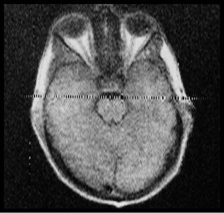
Areceiver bandwidth set too high.(1%)
Bmagnetic field inhomogeneity combined with aliasing.(7%)
Cdamaged Faraday cage.(85%)
Ddamaged conducting coils in the main magnet (Bo).(4%)
Eundersampling in the phase-encoded direction.(3%)
Your answerC
Correct answerC. damaged Faraday cage.
Vital Concept
The damaged Faraday cage allows external RF interference to contaminate the extremely sensitive MRI signal detection, creating characteristic linear "zipper" artifacts.
Explanation
damaged Faraday cage.
The image shows zipper artifact, which is related to spurious bands of noise in the phase-encoded direction. A common source is a spurious RF signal in the room. Spurious RF signals could be the result of damage to the Faraday cage, which shields the room from outside RF pulses.
Incorrect Answers:
A. The image shows zipper artifact, which is related to spurious bands of noise in the phase-encoded direction. A common source is a spurious RF signal in the room. Spurious RF signals could be the result of damage to the Faraday cage, which shields the room from outside RF pulses. A high receiver bandwidth does not produce this artifact. High receiver bandwidth will decrease the SNR of an image but can improve imaging time and reduce chemical shift or metal susceptibility artifacts.
B. Magnetic field inhomogeneity combined with aliasing underlies Moiré fringe artifact; this is not seen on the provided image.
D. Damage to the main magnet coils can result in a change in the main field strength, as well as overheating and potentially quenching. There is no relation to zipper artifact.
E. Undersampling in the phase-encoded direction results in Gibbs artifact (truncation artifact). There is no relation to zipper artifact.
Vital Concept: The damaged Faraday cage allows external RF interference to contaminate the extremely sensitive MRI signal detection, creating characteristic linear "zipper" artifacts.
Q37
easy QID 44080
Correct
The below abnormality is seen in a 27-year-old female patient with a history of two prior cesarean sections. Which of the following is the most likely diagnosis?
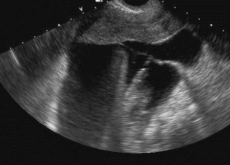
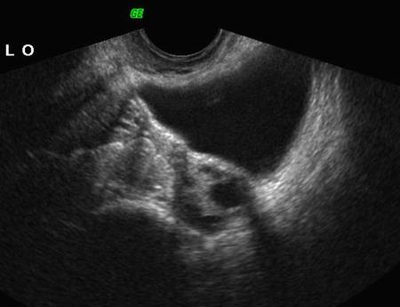
AEctopic pregnancy(4%)
BPeritoneal inclusion cyst(92%)
CSerous cystadenoma(1%)
DSimple ovarian cyst(2%)
EHemorrhagic ovarian cyst(1%)
Your answerB
Correct answerB. Peritoneal inclusion cyst
Vital Concept
Peritoneal inclusion cyst (multicystic peritoneal mesothelioma) shows characteristic spider-in-web appearance on ultrasound with ovaries entrapped within or contacting grapelike multiloculated thin-walled cysts, occurring in premenopausal women with prior pelvic surgery/trauma/endometriosis.
Explanation
Peritoneal inclusion cyst
The sonographic images show an anechoic fluid collection within the pelvis with geometric borders (blue arrows), which is distinct from the normal-looking ovary (green arrow). Given the imaging features and the history of prior surgery, the most likely diagnosis is a peritoneal inclusion cyst. Peritoneal inclusion cysts are often incidentally discovered. However, they may cause pelvic pain or swelling. They occur almost exclusively in premenopausal women with active ovaries, pelvic adhesions, and impaired absorption of peritoneal fluid, which leads to formation of fluid-filled cysts that conform to the shape of the peritoneal cavity. The most common peritoneal insults are endometriosis, pelvic inflammatory disease, previous abdominal or pelvic surgery, and trauma.
Incorrect Answers:
A. Ectopic pregnancy can have almost any appearance. However, a more complex appearance would be expected. It is often not asymptomatic, especially in cases of rupture.
C. Peritoneal inclusion cysts can mimic malignant ovarian neoplasms if the septation becomes irregular or thickened, and as such, clinical history becomes important, as does evaluation of the ovaries.
D. The ovary appears normal here, and the cyst is distinct from it. Thus, ovarian cyst is not a good answer choice.
E. Hemorrhagic cysts often have a lace-like internal echotexture. They are not anechoic.
Vital Concept: Peritoneal inclusion cyst (multicystic peritoneal mesothelioma) shows characteristic spider-in-web appearance on ultrasound with ovaries entrapped within or contacting grapelike multiloculated thin-walled cysts, occurring in premenopausal women with prior pelvic surgery/trauma/endometriosis.
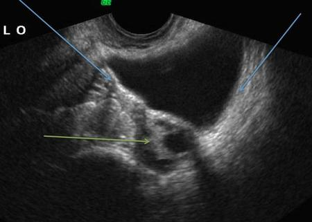
Q38
easy QID 39313
Correct
Which of the following MR safety zones contains the scanner control room?
AZone I(0%)
BZone II(2%)
CZone III(93%)
DZone IV(5%)
EZone V(0%)
Your answerC
Correct answerC. Zone III
Explanation
Zone III
There are several safety measures involved in the use of magnetic resonance (MR) scanners, primarily due to the scanners’ strong magnetic fields. One safety measure is the zone classification system that signifies progressive monitoring and restriction of entry into higher numbered, more controlled zones. Zone III is the area where there is a potential danger of serious injury or death from the interaction between unscreened people or ferromagnetic objects and the magnetic field of the scanner. The scanner control room is typically in Zone III. Access to Zone III must be strictly restricted and under the supervision of MR personnel with physical restrictions such as locks or passkey systems.
Incorrect Answers:
A. Zone I signifies unrestricted access. It is the area through which patients and personnel enter the controlled MR environment.
B. Zone II is the interface between the unrestricted access of Zone I and the tightly controlled access to Zones III and IV. Zone II can be used to greet patients, obtain histories, and screen patients for safety issues. Patients in Zone II should be under the supervision of MR personnel.
D. Zone IV is the highest of the four MR safety zones. Zone IV not only denotes the location of the MR scanner magnet room, but it is also accessible only under the direct observation of MR personnel. Zone IV should be clearly demarcated and marked as potentially hazardous due to the strong magnetic field.
E. Zone V does not currently exist within the MR safety zone classification system. The highest, most controlled level in the classification system is Zone IV.
Q39
easy QID 37409
Correct
A 56-year-old patient who has undergone a motor vehicle accident since their previous screening mammogram has new calcifications on their left breast. Which of the following calcifications is often associated with fat necrosis?
AMilk of calcium(2%)
BDystrophic(96%)
CScattered fine smooth(0%)
DRod-like(0%)
EDermal(2%)
Your answerB
Correct answerB. Dystrophic
Vital Concept
Dystrophic calcifications are coarse calcifications that develop in areas of tissue damage, appearing as rim calcifications around oil cysts, scattered coarse deposits, or occasionally clustered pleomorphic calcifications that can mimic malignancy. While typically benign, they require clinical correlation when morphologically suspicious.
Explanation
Dystrophic
Fat necrosis is a benign process that can arise in the setting of trauma, radiation, surgery, ductal ectasia, or breast infection. A common cause is seat belt injury from a motor vehicle accident. The calcifications of fat necrosis typically appear as either irregular dystrophic calcifications along the course of the seat belt or radiolucent oil cysts.
Incorrect Answers:
A. Milk of calcium are fine calcifications that sediment out of cystic fluid, appearing amorphous on craniocaudal view and as a fluid-calcium level on the lateral view. This is a benign condition associated with apocrine metaplasia and fibrocystic changes in the breast.
C. Scattered fine smooth calcifications can be seen in sclerosing adenosis, with or without architectural distortion. Sclerosing adenosis is a benign proliferative disease which develops from fibrotic changes in the ductal unit and is most often seen in perimenopausal patients.
D. Rod-like calcifications are associated with ductal ectasia and form solid or discontinuous smooth linear rods, usually > 1 mm in diameter. They can have lucent centers if the calcium is in the wall of the duct and will generally be solid when secretions calcify in the lumen of ectatic ducts.
E. Dermal calcifications are commonly located in the parasternal region, inframammary fold, axilla, or periareolar region.
Vital Concept: Dystrophic calcifications are coarse calcifications that develop in areas of tissue damage, appearing as rim calcifications around oil cysts, scattered coarse deposits, or occasionally clustered pleomorphic calcifications that can mimic malignancy. While typically benign, they require clinical correlation when morphologically suspicious.
Q40
hard QID 48121
Incorrect
Based on the metabolic abnormality depicted below, which of the following serum levels would you expect to find?
Pseudohypoparathyroidism shows shortened metacarpals (brachydactyly) on hand radiographs, basal ganglia calcifications on head computed tomography, and laboratory pattern of hypocalcemia, hyperphosphatemia, and elevated parathyroid hormone due to parathyroid hormone resistance.
Explanation
↓ Calcium ↑ Phosphate ↑ Parathyroid hormone
The hand radiograph provided demonstrates multifocal metacarpal and phalangeal shortening and widening, preferentially affecting the 2nd, 4th, and 5th rays (blue arrows). The head CT shows symmetric basal ganglia calcifications (orange arrows). With regard to metabolic bone disease, the appearance of the hand can be seen in both pseudohypoparathyroidism (PHP) and pseudopseudohypoparathyroidism (PPHP), although the basal ganglia calcifications are seen much more frequently in the former.
The term pseudohypoparathyroidism describes a group of abnormalities characterized by clinical and laboratory findings of hypoparathyroidism (hypocalcemia and hyperphosphatemia), but with high plasma levels of PTH due to target tissue resistance.
There are several recognized subtypes. In type Ia, also referred to as Albright hereditary osteodystrophy, there are characteristic phenotypic features including short stature, characteristically shortened fourth and fifth metacarpals, rounded facies, and often mild intellectual disability. Type Ib and type II lack the phenotypical features found in IA but have the same biochemical profile ( ↓ Calcium ↑ Phosphate and ↑ Parathyroid hormone).
Incorrect Answers:
A. B. D. As discussed above, these are incorrect hormone level combinations.
Vital Concept: Pseudohypoparathyroidism shows shortened metacarpals (brachydactyly) on hand radiographs, basal ganglia calcifications on head computed tomography, and laboratory pattern of hypocalcemia, hyperphosphatemia, and elevated parathyroid hormone due to parathyroid hormone resistance.
Q41
easy QID 2842
Correct
A 62-year-old female was sent from her nursing home with an altered mental status. Her past medical history is significant for rapidly progressive dementia and myoclonus. A magnetic resonance image (MRI) of the brain was performed, and three diffusion-weighted images are shown below. Which of the following is the most likely diagnosis?
Scattered asymmetric cortical restricted diffusion across multiple brain levels is the classic DWI signature of sporadic Creutzfeldt-Jakob disease.
Explanation
Sporadic Creutzfeldt-Jakob disease
Creutzfeldt-Jakob disease (CJD) is a prion disease that is categorized as either familial, sporadic or acquired. Sporadic is the most common, accounting for 85% of cases.
The typical MRI feature of the sporadic form of CJD include diffuse asymmetric cortical high diffusion-weighted imaging (DWI) and fluid-attenuated inversion recovery (FLAIR) signal. A similar abnormality may be seen in the deep gray matter (basal ganglia and thalamus).
The asymmetric, scattered cortical distribution distinguishes sCJD from other causes of restricted diffusion like stroke (vascular territory) or hypoxic injury (symmetric watershed pattern). The cortical predominance, especially involving temporal regions, insula, and cingulate areas, is characteristic of prion disease neurotropism. In this case with rapidly progressive dementia and myoclonus, the best diagnosis is sporadic CJD.
Incorrect Answers:
A. Gliomatosis cerebri is a rare growth pattern of diffuse gliomas that involves at least three lobes by definition, have frequent bilateral growth, and may extend to infratentorial structures.
B. Cryptococcal infection can display a range of radiographic appearances, including:
The most common pattern, particularly in profoundly immunocompromised patients, is spread along the perivascular spaces, most commonly involving the basal ganglia, but also the white matter of the cerebral hemispheres, the brainstem, and cerebellum.
MRI is better at assessing dilated perivascular spaces, one of the most frequently described features on MRI, and basal ganglia pseudocysts. These findings are more common in immunocompromised patients. Signal characteristics can vary dependent on the form of infection.
C. Typically in ischemic stroke, DWI on MRI is very specific and varies according to phase. In the acute phase, T2WI will be normal, but in time the infarcted area will become hyperintense. The hyperintensity on T2WI reaches its maximum between 7 and 30 days. After this, it starts to fade. DWI is already positive in the acute phase and then becomes brighter with a maximum at 7 days. DWI in brain infarction will be positive for approximately 3 weeks after onset (in spinal cord infarction DWI is only positive for one week). ADC will be of low signal intensity with a maximum at 24 hours and then will increase in signal intensity and finally becomes bright in the chronic stage.
D. Pyogenic abscesses evolve through the early cerebritis, late cerebritis, early capsular, and late capsular stages of formation. In the cerebritis stage, pyogenic abscesses are seen as T1 hypointense and T2 hyperintense areas with minimal or nonhomogeneous enhancement.
Vital Concept: Scattered asymmetric cortical restricted diffusion across multiple brain levels is the classic DWI signature of sporadic Creutzfeldt-Jakob disease.
Q42
easy QID 58011
Correct
A 64-year-old male presents with worsening right-sided hearing loss over the last several years. Clinical exam shows that hearing loss is likely conductive rather than sensorineural. According to the ACR Appropriateness Criteria, what is the best initial imaging choice for further workup?
AMRI internal auditory canal with and without contrast(3%)
BCT temporal bone without contrast(95%)
CCT head with and without contrast(1%)
DMRI brain without contrast(0%)
Your answerB
Correct answerB. CT temporal bone without contrast
Explanation
CT temporal bone without contrast
In the setting of conductive hearing loss, CT is far superior compared to MRI in evaluating the small osseous structures involved in sound transmission according to the ACR Appropriateness Criteria. Diagnoses such as exostoses, erosions related to a cholesteatoma, otosclerosis, ossicular chain disruption, or bony dehiscence of the tegmen tympani or semicircular canal may be readily evident on high-resolution temporal bone CT without IV contrast. Oblique reformatted images can be generated to improve diagnostic confidence with both parallel and perpendicular imaging planes relative to the semicircular canal, referred to as Poschle and Stenver views.
Incorrect Answers:
A. MRI IAC with and without contrast would be the ideal choice in the setting of sensorineural hearing loss.
C. The increased spatial resolution of a dedicated temporal bone CT provides better diagnostic ability compared to a routine head CT. Additionally, IV contrast would not be required.
D. An unenhanced MRI brain would be inappropriate as a first-line choice in the setting of conductive hearing loss.
Q43
QID 48137
Correct
A 62-year-old male patient with known HIV presents with the following MRI findings. The patient was treated promptly with pyrimethamine and sulfadiazine with a good response. Which of the following most likely accounts for the signal abnormality in the right medulla?
ATransneuronal degeneration(64%)
BToxoplasmosis(29%)
CMicroangiopathic changes(5%)
DTuberculosis(2%)
Your answerA
Correct answerA. Transneuronal degeneration
Vital Concept
Right hypertrophic olivary degeneration with left cerebellar abscess follows the contralateral pattern - a left cerebellar lesion disrupts the left dentate nucleus, causing deafferentiation and subsequent hypertrophy of the contralateral (right) inferior olivary nucleus via interruption of the dentate-rubro-olivary pathway.
Explanation
Transneuronal degeneration
MRI findings demonstrate toxoplasmosis lesion in the left cerebellar hemisphere. The increased signal abnormality in the right lateral medulla (red arrow) is located in the region of the olivary nucleus. Therefore, this likely represents hypertrophic olivary degeneration. This process is secondary to a lesion in the dentato-rubro-olivary pathway (Guillain-Mollaret triangle) causing transsynaptic degeneration. Briefly, this pathway is composed of the ipsilateral olivary nucleus, contralateral dentate nucleus, and ipsilateral red nucleus.
Vital Concept: Right hypertrophic olivary degeneration with left cerebellar abscess follows the contralateral pattern - a left cerebellar lesion disrupts the left dentate nucleus, causing deafferentiation and subsequent hypertrophy of the contralateral (right) inferior olivary nucleus via interruption of the dentate-rubro-olivary pathway.
Q44
easy QID 4979
Correct
Which of the following abnormal findings is demonstrated in the contrast-enhanced axial computed tomography (CT) images in the heart shown below?
AAbsence of pericardium(0%)
BAnomalous left coronary artery(4%)
CAscending aortic dissection(0%)
DAnomalous right coronary artery(96%)
Your answerD
Correct answerD. Anomalous right coronary artery
Vital Concept
Anomalous RCA arising from the left coronary cusp requires immediate assessment of arterial course—an inter-arterial path (between aorta and pulmonary artery) carries high risk of sudden cardiac death in young athletes due to potential compression during exercise, while prepulmonic, retroaortic, or septal courses are benign variants requiring no intervention.
Explanation
Anomalous right coronary artery
There is presence of an anomalous right coronary artery, originating from the left coronary sinus of Valsalva. The anomalous right coronary artery in this case appear suspicious for inter-arterial course as it travels between the proximal pulmonary artery/right ventricular outflow tract and ascending aorta.
An anomalous right coronary artery with an inter-arterial course has a severe prognosis and is therefore referred to as malignant. Rising pressure within both the aorta and pulmonary artery during exercise may compress the anomalous coronary artery and cut off blood supply to the right heart.
Incorrect Answers:
A. The pericardium is present.
B. The left coronary artery is also seen originating from the left sinus of Valsalva, which is its expected normal origin.
C. No dissection flap is seen in the visualized portions of the ascending aorta to suggest the presence of an aortic dissection.
Vital Concept: Anomalous RCA arising from the left coronary cusp requires immediate assessment of arterial course—an inter-arterial path (between aorta and pulmonary artery) carries high risk of sudden cardiac death in young athletes due to potential compression during exercise, while prepulmonic, retroaortic, or septal courses are benign variants requiring no intervention.
Q45
hard QID 43881
Correct
Which of the following is the likely diagnosis in this 8-year-old patient with leg pain?
AJuxtacortical myositis ossificans(5%)
BChondrosarcoma(4%)
COsteochondroma(73%)
DParosteal osteosarcoma(18%)
Your answerC
Correct answerC. Osteochondroma
Explanation
Osteochondroma
The T2 weighted images show posterior exostosis with T2 cap signal. These features are diagnostic of an osteochondroma.
Osteochondromas are common imaging findings, accounting for up to 15% of bone tumors. They are felt to represent a developmental lesion and are postulated to arise from aberrant growth of physeal plate or herniation of plate into metaphysis. They are frequently asymptomatic and found as incidental findings. Osteochondromas may cause pain secondary to mechanical effects of the lesion, fracture, or malignant transformation, the potential for which is very low if sporadic and solitary.
Incorrect Answers:
A. Juxtacortical myositis ossificans is incorrect. Mature myositis may have similar bony architecture (marrow, trabeculations, cortex) as an osteochondroma. However, no connection to underlying cortex and marrow is present.
B. Chondrosarcoma may rarely arise from malignant transformation of an osteochondroma. In this instance the lesion continues to grow following skeletal maturation. There is a change in character of calcified matrix, osseous destruction, or soft tissue mass. A cartilage cap greater than 1.5 to 2 cm in thickness in a skeletally mature patient should arouse suspicious for malignant degeneration. New pain, not related to other exostosis complication, is often seen. Please note, thickened cartilage cap in children can imply growth and be up to 1 to 3 cm in thickness, but thick cartilage cap is otherwise less specific for malignancy in the pediatric population.
D. Parosteal osteosarcomas arise from the cortical surface and appear as bone matrix producing masses. However, cartilage would not be present and there would not be corticomedullary continuity with underlying bone.
Q46
QID 63868
Correct
Which of the following is the most way to determine the specific anatomic location of the findings shown in the image below?
AColor Doppler evaluation.(8%)
BApplying gentle pressure with the transvaginal probe.(71%)
CPresence or absence of a fluid-filled structure in the endometrial cavity.(14%)
DPresence of pain(7%)
Your answerB
Correct answerB. Applying gentle pressure with the transvaginal probe.
Explanation
Applying gentle pressure with the transvaginal probe.
When pressure is applied between the two left adnexal structures during real-time scanning, they will separate if they are arising from different anatomic location (as in the case of left tubal ectopic with left ovarian cystic lesion, as shown here). If they move in unison, they likely both arise from the ovary.
Findings supporting ectopic pregnancy rather than corpus luteum include a thick, hyperechoic rim surrounding the cystic structure, presence of a yolk sac (seen here), absence of an intrauterine gestational sac when the beta-HCG is greater than 2000 mIU/mL, and complex pelvic free fluid.
Incorrect Answers:
A. Color Doppler evaluation cannot determine whether this is ectopic pregnancy or a corpus luteum as both will display the “ring of fire”.
C. A fluid-filled structure in the endometrium could represent an early intrauterine gestation or blood in the cavity (pseudo sac). If a yolk sac is seen inside a fluid-filled structure in the cavity, then the diagnosis of intrauterine pregnancy can be made.
D.Pain exists both in ectopic pregnancy and ovarian corpus luteum.
Q47
easy QID 60069
Correct
A 56-year-old woman undergoes screening mammography. A small group of amorphous calcifications are seen in the right upper outer breast. She subsequently undergoes stereotactic core biopsy and pathology shows atypical ductal hyperplasia. What is the next best step in management?
A6 month mammographic follow-up(3%)
BContrast-enhanced MRI(2%)
CRepeat stereotactic core biopsy(1%)
DSurgical excision(94%)
Your answerD
Correct answerD. Surgical excision
Explanation
Surgical excision
Atypical ductal hyperplasia (ADH) should under surgical excision as a significant portion are upstaged to ductal carcinoma in situ on final pathology. It is comprised of epithelial hyperplasia within a duct and meets some, but not all, criteria for low grade DCIS. ADH can also coexist with other lesions such as fibroadenomas or papillomas. It is classified as a high risk breast lesion like radial scars, flat epithelial atypia, and papillary lesions. Sampling errors in these high risk breast lesions may underestimate malignant potential and hence surgical resection is indicated.
Incorrect Answers:
A. Atypical ductal hyperplasia is considered a high risk breast lesion and should be surgically excised rather than undergo surveillance imaging.
B. Further evaluation with MRI would likely not provide additional diagnostic value.
C. Repeat stereotactic core biopsy may upstage the histology due to differences in sampling, but not to the degree of surgical resection.
Q48
hard QID 2960
Correct
A 64-year-old male presents to the emergency department (ED) for evaluation of severe back pain. He has a history of hypertension, diabetes, obesity, and coronary artery disease. He states that the pain began while doing yard work. He has a long history of smoking. The emergency department workup rules out acute coronary syndrome, but the physician orders a computed tomography (CT) scan to rule out an aortic dissection. Evaluation of the patient's CT determines that there is no aortic dissection; however, an incidental, solitary pulmonary nodule is discovered in the middle lobe. The nodule measures 7 mm and is smoothly marginated and non-calcified. Which of the following recommendations regarding follow-up of the nodule is correct?
ANo follow-up is needed.(1%)
BThe patient should have an initial follow-up at 12 months and if there is no change, no further imaging needed.(12%)
CThe patient should have an initial follow-up CT at 6 to 12 months and at 18 to 24 months if there is no change.(71%)
DThe patient should have a CT at 3 months, PET-CT, or biopsy immediately.(4%)
Your answerC
Correct answerC. The patient should have an initial follow-up CT at 6 to 12 months and at 18 to 24 months if there is no change.
Vital Concept
Fleischner Society guidelines use risk-stratified management where patient factors (age, smoking history) combined with nodule size determine follow-up intervals more than morphologic features. For 6 to 8 mm solid nodules in high-risk patients, systematic follow-up at 6 to 12 months then 18 to 24 months is recommended regardless of smooth margins, as benign morphology does not exclude malignancy in high-risk individuals.
Explanation
The patient should have an initial follow-up CT at 6 to 12 months and at 18 to 24 months if there is no change.
Many solitary pulmonary nodules remain indeterminate after conventional radiologic evaluation. Nodules may be treated with biopsy, resection, or simple observation depending on the radiologic appearance of the nodule, the patient's clinical history and current status, and the likelihood of malignancy. The Fleischner Society pulmonary nodule recommendations guide the follow-up and management of nodules smaller than 8 mm.
The recommendations apply to newly identified pulmonary nodules detected incidentally at non-screening CT in adults older than age 35. The guidelines are based on whether or not a person is considered to be at low or high risk for the development of lung cancer. Low-risk patients have a minimal or absent history of smoking and/or other known risk factors. High-risk patients have a history of smoking or other risk factors for the development of lung cancer.
If the nodule size is less than 6 mm, low-risk patients require no follow-up and high-risk patients may have optional CT follow-up at 12 months and if no change, no imaging needed. If the nodule size is between 6 and 8 mm low-risk patients require follow-up at 6 to 12 months and if no change, consider CT at 18 to 24 months. High-risk patients require initial follow-up CT at 6 to 12 months and then at 18 to 24 months if no change. If the nodule size is greater than 8 mm, both low- and high-risk patients should consider CT at 3 months, PET-CT, and/or biopsy.
Incorrect Answers:
B. This is the recommendation for only patients with solitary pulmonary nodules measuring less than 6 mm.
D. This is the recommendation for both low- and high-risk patients with solitary pulmonary nodules measuring greater than 8 mm.
Vital Concept: Fleischner Society guidelines use risk-stratified management where patient factors (age, smoking history) combined with nodule size determine follow-up intervals more than morphologic features. For 6 to 8 mm solid nodules in high-risk patients, systematic follow-up at 6 to 12 months then 18 to 24 months is recommended regardless of smooth margins, as benign morphology does not exclude malignancy in high-risk individuals.
Q49
easy QID 39329
Correct
A radiologist is researching the efficacy of a new radioactive tracer in detecting brain tumors. Which of the following professional responsibilities is the attending radiologist most likely exemplifying?
ADistribution of resources(0%)
BImproving access to care(0%)
CManaging conflicts of interest(0%)
DProfessional commitment(5%)
EScientific knowledge(94%)
Your answerE
Correct answerE. Scientific knowledge
Explanation
Scientific knowledge
The radiologist’s research signifies the quest for scientific knowledge, which is a key professional responsibility. Physicians must adhere to and practice scientific standards in their medical practice, in addition to promoting research and discovering new knowledge that can be beneficially employed by members of the profession. Physicians must protect the integrity of scientific knowledge with scientific evidence and medical experience.
Incorrect Answers:
A. Ensuring a just distribution of finite resources is a key professional responsibility. Physicians should practice medicine that is based on wise and cost-effective management of limited clinical resources. This involves avoiding unnecessary tests and procedures that would otherwise expose patients to avoidable harm and expenses.
B. Improving access to care is a key professional responsibility. Physicians should be dedicated to making uniform and quality health care available by eliminating access barriers based on education, laws, finances, geography, or social discrimination. Improving access to care also involves health advocacy and the promotion of public health.
C. Managing conflicts of interest is a key professional responsibility. Physicians must take care to avoid exposing themselves and their patients to situations that unnecessarily compromise patient care for personal gain. Physicians have a professional and ethical obligation to publicly disclose conflicts of interest that arise over the course of their professional career.
D. Commitment to the medical profession is a key professional responsibility. Physicians should commit themselves to collaborating with other health care professionals in order to maximize patient care, participate in self-regulation of the profession, and create and implement standards that will be followed by current and future members of the profession.
Q50
QID 41465
Correct
A 56-year-old patient with breast cancer is undergoing a restaging PET CT. The patient is accidentally given the wrong dose of F-18 FDG, which differs from the prescribed dose by more than 50 rem in addition to exceeding the prescribed dose by over 50%. The provider begins the documentation for this medical event. Within which time span must the provider notify the Nuclear Regulatory Commission by telephone?
A24 hours(92%)
B48 hours(3%)
C72 hours(2%)
D7 days(2%)
E2 weeks(1%)
Your answerA
Correct answerA. 24 hours
Explanation
24 hours
For all medical uses of NRC-licensed radioactive materials, a "medical event" occurs if both the dose administered differs from what was prescribed and the difference meets the NRC's reporting requirements, and one or more of the following representative incidents occur:
1. The dose given is off by at least 20 percent from the prescribed dose, either too high or too low.
2. The wrong radioactive drug is used.
3. The radioactive drug is administered by the wrong route.
4. The wrong individual receives the dose.
5. A dose is administered to the wrong part of the body and exceeds 50 percent or more the dose that area should have received, or a sealed source used in the treatment leaks.
These must be communicated to the NRC as follows:
1. Telephone the NRC within 24 hours.
2. Written report to NRC within 15 days.
3. Notify the referring physician within 24 hours.
The NRC requires reporting because a medical event shows the licensee had problems in administering the doctor's prescription. Dose errors may be a sign that there are problems in the medical facility's operations that need correcting. The NRC analyzes each event to see if further action is needed. If there is a violation, the NRC might take enforcement action. The facility must also do an analysis to see if a patient is actually harmed, whether from too high a dose or inadequate treatment when a dose is too low. In severe events (for example, rare dose errors that are well over 20 percent too high or too low), an independent medical consultant may also assess the patient's risk of harm.